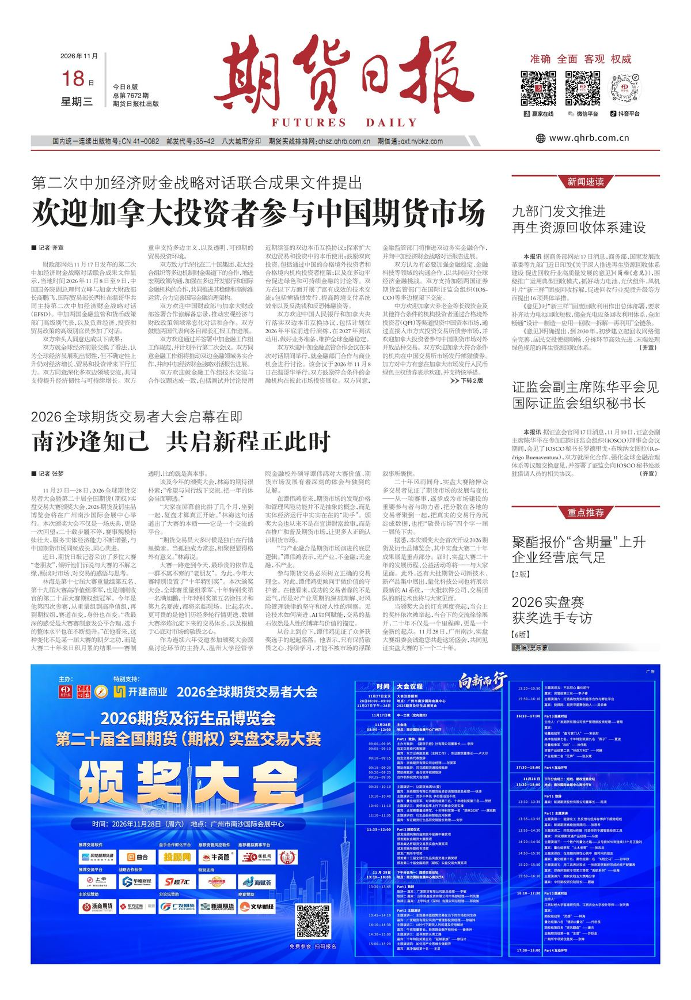
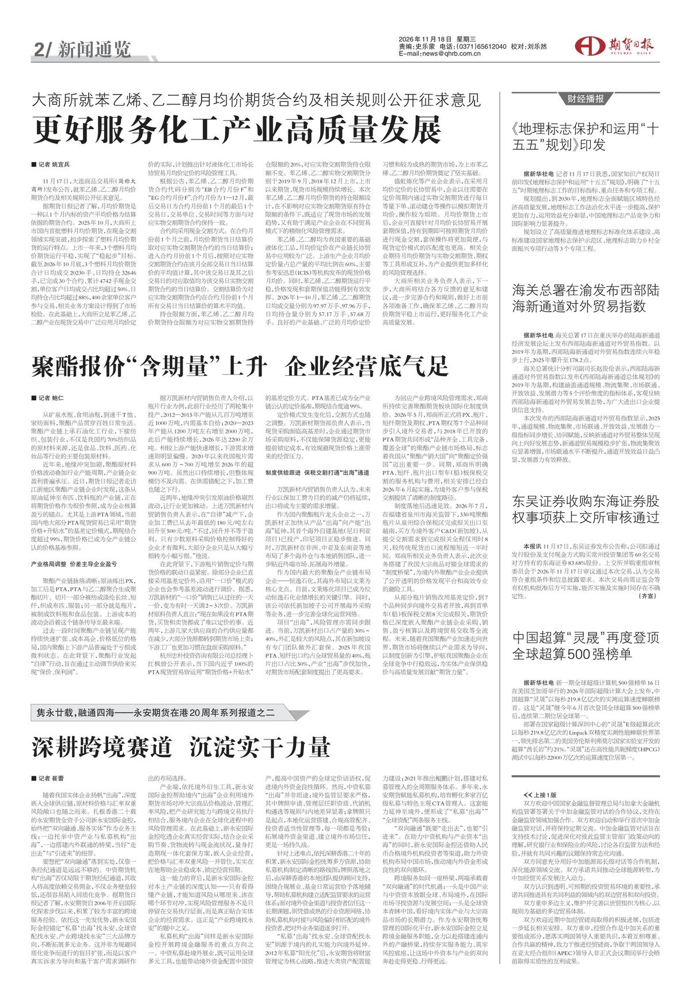
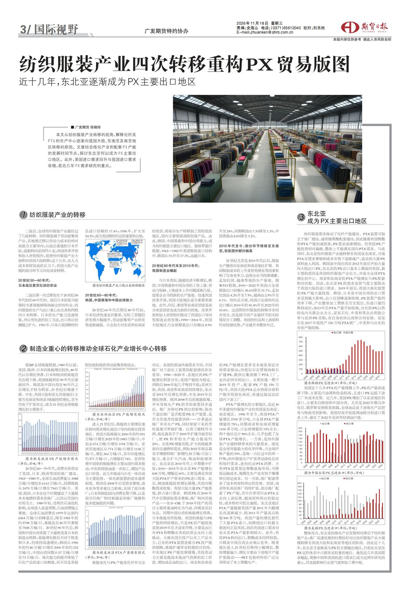
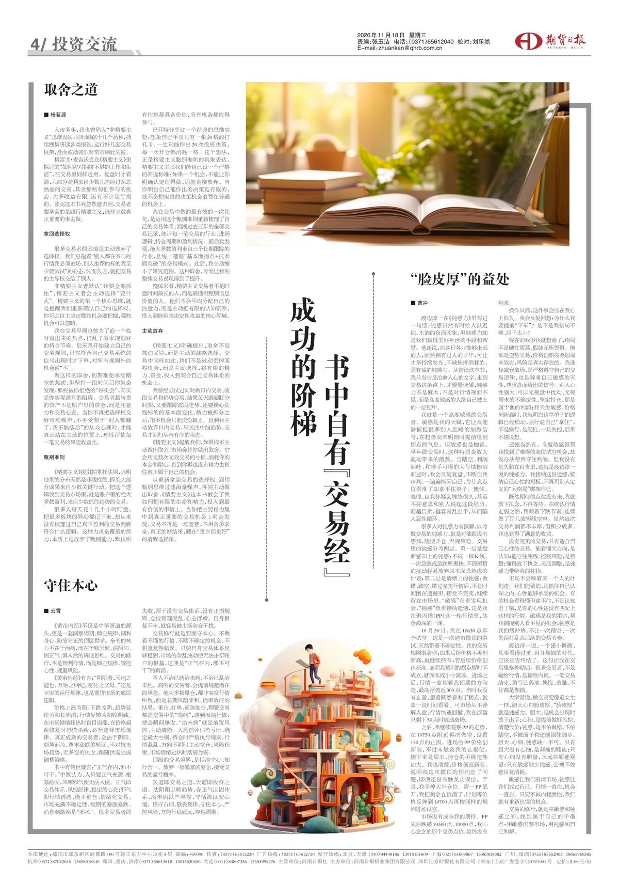
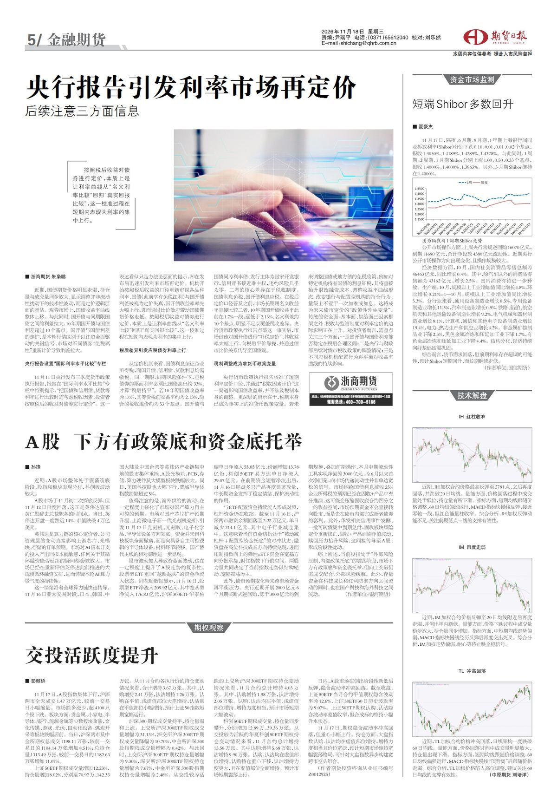
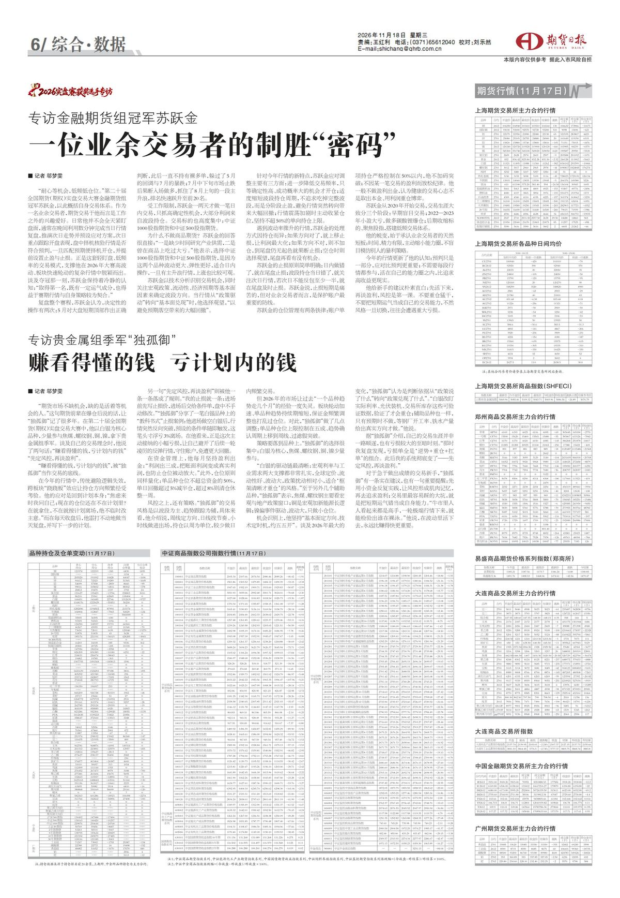
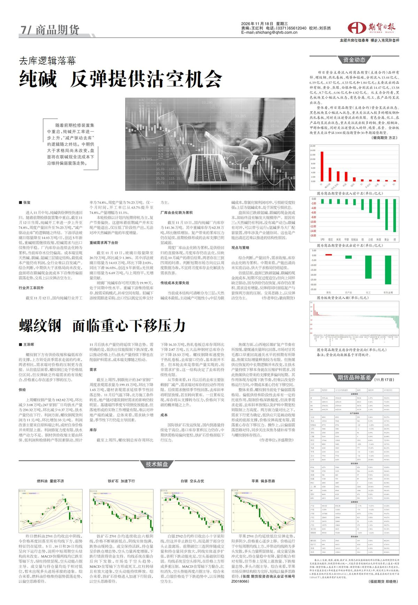
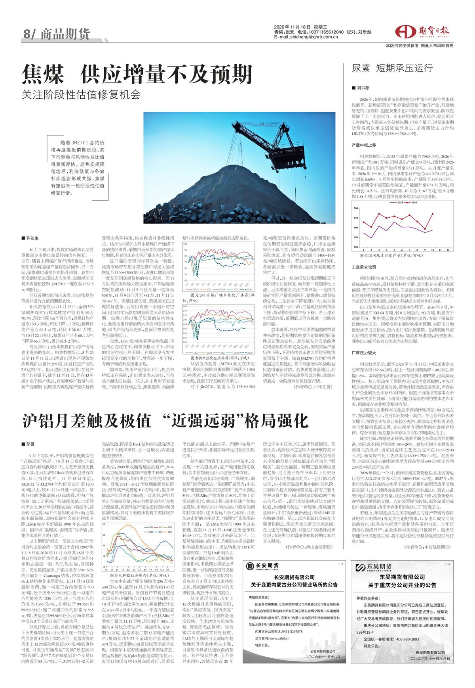

证监会副主席陈华平会见国际证监会组织秘书长
本报讯据证监会官网17日消息，11月10日，证监会副主席陈华平在参加国际证监会组织（IOSCO）理事会会议期间，会见了IOSCO秘书长罗德里戈·布埃纳文图拉（Ro⁃drigo Buenaventura），双方就深化合作、强化全球金融治理体系等议题交换意见，并签署了证监会向IOSCO秘书处派驻借调人员的相关协议。
（齐宣）

本报讯据证监会官网17日消息，11月10日，证监会副主席陈华平在参加国际证监会组织（IOSCO）理事会会议期间，会见了IOSCO秘书长罗德里戈·布埃纳文图拉（Ro⁃drigo Buenaventura），双方就深化合作、强化全球金融治理体系等议题交换意见，并签署了证监会向IOSCO秘书处派驻借调人员的相关协议。
（齐宣）
11 月27 日—28 日，2026 全球期货交易者大会暨第二十届全国期货（期权）实盘交易大赛颁奖大会、2026期货及衍生品博览会将在广州南沙国际会展中心举行。本次颁奖大会不仅是一场庆典，更是一次回望：二十载步履不停，赛事规模持续壮大，服务实体经济能力不断增强，与中国期货市场同频成长、同心共进。
近日，期货日报记者采访了多位大赛“老朋友”，倾听他们诉说与大赛的不解之缘，畅谈对市场、对交易的感悟与思考。
林海是第十七届大赛重量组第五名、第十九届大赛高净值组季军，也是刚刚收官的第二十届大赛期权组冠军。今年是他第四次参赛，从重量组到高净值组，再到期权组，赛道在变，身份也在变。
“我最
深的感受是大赛赛制愈发公平合理，选手的整体水平也在不断提升。”在他看来，这种变化不是某一届大赛的朝夕之功，而是大赛二十年来日积月累的结果——赛制透明，比的就是真本事。
谈及今年的颁奖大会，林海的期待很朴素：“希望与同行线下交流，把一年的体会当面聊透。”“大家在屏幕前比拼了几个月，坐到一起，复盘才算真正开始。”林海这句话道出了大赛的本质——它是一个交流的平台。
“期货交易员大多时候是独自在行情里摸索。当孤独成为常态，相聚便显得格外有意义。”林海说。
大赛一路走到今天，最珍贵的依靠是一群不离不弃的“老朋友”。为此，今年大赛特别设置了“十年特别奖”。本次颁奖大会，全球赛重量组季军、十年特别奖第一名满旭鹏，十年特别奖第五名徐钰才和第九名夏波，都将亲临现场。比起名次，更可贵的是他们历经多轮行情更迭、数届大赛淬炼沉淀下来的交易体系，以及根植于心底对市场的敬畏之心。
作为连续六年受邀参加颁奖大会圆桌讨论环节的主持人，温州大学经管学院金融校外硕导谭伟鸿对大赛价值、期货市场发展有着深刻的体会与独到的见解。
在谭伟鸿看来，期货市场的发现价格和管理风险功能并不是抽象的概念，而是实体经济运行中实实在在的“助手”。颁奖大会也从来不是在宣讲财富故事，而是在推广和普及期货市场，让更多人正确认识期货市场。
“与产业融合是期货市场演进的底层逻辑。”谭伟鸿表示，无产业，不金融；无金融，不产业。
参与期货交易必须树立正确的交易理念。对此，谭伟鸿更倾向于做价值的守护者。在他看来，成功的交易者靠的不是运气，而是对产业周期的深刻理解、对风险管理铁律的坚守和对人性的洞察。无论技术如何演进、AI 如何赋能，交易的基石依然是人性的博弈与价值的锚定。
从台上到台下，谭伟鸿见证了众多获奖选手的起起落落。他表示，只有保持敬畏之心、持续学习，才能不被市场的浮躁叙事所裹挟。
二十年风雨同舟，实盘大赛陪伴众多交易者见证了期货市场的发展与变化——从一项赛事，逐步成为市场建设的重要参与者与助力者，把分散在各地的交易者聚到一起，把真实的交易行为沉淀成数据，也把“敬畏市场”四个字一届一届传下去。
据悉，本次颁奖大会首次开设2026期货及衍生品博览会，其中实盘大赛二十年成果展是重点部分。届时，实盘大赛二十年的发展历程、公益活动等将一一与大家见面。此外，还有大批期货公司新技术、新产品集中展出，量化科技公司也将展示最新的AI 系统，一大批软件公司、交易团队的新技术也将与大家见面。
当颁奖大会的灯光再度亮起，当台上的奖杯依次被举起，当台下的交流徐徐展开，二十年不仅是一个里程碑，更是一个全新的起点。11月28日，广州南沙，实盘大赛组委会诚邀您共赴这场盛会，共同见证实盘大赛的下一个二十年。
2026全球期货交易者大会启幕在即南沙逢知己共启新程正此时
本报讯据商务部网站17日消息，商务部、国家发展改革委等九部门近日印发《关于深入推进再生资源回收体系建设促进回收行业高质量发展的意见》（简称《意见》），围绕推广运用典型回收模式，抓好动力电池、光伏组件、风机叶片“新三样”固废回收拆解，促进回收行业提质升级等方面提出16项具体举措。
《意见》对“新三样”固废回收利用作出总体部署，要求补齐动力电池回收短板，健全光电设备回收利用体系，全面畅通“设计—制造—应用—回收—拆解—再利用”全链条。
《意见》明确提出，到2030 年，初步建立起回收网络健全完善、居民交投便捷顺畅、分拣环节高效先进、末端处理绿色规范的再生资源回收体系。
（齐宣）
第二次中加经济财金战略对话联合成果文件提出欢迎加拿大投资者参与中国期货市场站11月17日发布的第二次中加经济财金战略对话联合成果文件显示，当地时间2026 年11 月8 日至9 日，中国国务院副总理何立峰与加拿大财政部长商鹏飞、国际贸易部长西杜在温哥华共同主持第二次中加经济财金战略对话（EFSD）。中加两国金融监管和货币政策部门高级别代表，以及负责经济、投资和贸易政策的高级别官员参加了对话。
双方牵头人同意达成以下成果：
双方就全球经济前景交换了看法，认为全球经济虽展现出韧性，但不确定性上升仍对经济增长、贸易和投资带来下行压力。双方同意深化多双边领域交流，共同支持提升经济韧性与可持续增长。双方重申支持多边主义，以及透明、可预期的贸易投资环境。
双方致力于深化在二十国集团、亚太经合组织等多边机制财金渠道下的合作，增进宏观政策沟通，加强在多边开发银行和国际金融机构的合作，共同推进其稳健和高标准运营，合力完善国际金融治理架构。
双方欢迎中国财政部与加拿大财政部签署合作谅解备忘录，推动宏观经济与财政政策领域常态化对话和合作。双方鼓励两国代表向各自部长汇报工作进展。
双方欢迎通过并签署中加金融工作组工作规范，并计划举行第二次会议。双方同意金融工作组将推动双边金融领域务实合作，并向中加经济财金战略对话报告进展。
双方欢迎就金融工作组技术交流与合作议题达成一致，包括测试并讨论使用近期续签的双边本币互换协议；探索扩大双边贸易和投资中的本币使用；鼓励双向投资，包括通过中国的合格境外投资者和合格境内机构投资者框架；以及在多边平台促进绿色和可持续金融的讨论等。双方在以下方面开展了富有成效的技术交流：包括熊猫债发行、提高跨境支付系统效率以及反洗钱和反恐怖融资等。
双方欢迎中国人民银行和加拿大央行落实双边本币互换协议，包括计划在2026 年年底前进行演练，在2027 年测试动用，做好业务准备，维护全球金融稳定。
双方欢迎中加金融监管合作会议在本次对话期间举行，就金融部门合作与商业机会进行讨论。该会议于2026 年11 月8日在温哥华举行，双方鼓励符合条件的金融机构在彼此市场投资展业。双方同意，金融监管部门将推进双边务实金融合作，并向中加经济财金战略对话报告进展。
双方认为有必要加强金融稳定、金融科技等领域的沟通合作，以共同应对全球经济金融挑战。双方支持加强两国证券期货监管部门在国际证监会组织（IOS⁃CO）等多边框架下交流。
中方欢迎加拿大养老金等长线资金及其他符合条件的机构投资者通过合格境外投资者（QFI）等渠道投资中国资本市场，通过直接入市方式投资交易所债券市场，并欢迎加拿大投资者参与中国期货市场对外开放品种交易。双方欢迎加拿大符合条件的机构在中国交易所市场发行熊猫债券。
加方对中方有意在加拿大市场发行人民币绿色主权债券表示欢迎，并支持该举措。
下转2版

据新华社电记者11 月17 日获悉，国家知识产权局日前印发《地理标志保护和运用“十五五”规划》，明确了“十五五”时期地理标志工作的目标指标、重点任务和专项工程。
规划提出，到2030 年，地理标志全面赋能区域特色经济高质量发展，地理标志工作法治化水平进一步提高，保护更加有力，运用效益充分彰显，中国地理标志产品竞争力和国际影响力显著提升。
规划设立了高质量推进地理标志标准化体系建设、高标准建设国家地理标志保护示范区、地理标志助力乡村全面振兴专项行动等3个专项工程。
从矿泉水瓶、食用油瓶，到速干T恤、家纺面料，聚酯产品贯穿百姓日常生活。
聚酯产业链上承石油化工行业，下接纺织、包装行业，不仅是我国约70%纺织品的原材料来源，还是食品、饮料、医药、化妆品等行业的主要包装原材料。
近年来，地缘冲突加剧，聚酯原材料价格波动叠加行业产能周期，产业链企业盈利普遍承压。近日，期货日报记者走访江浙地区聚酯产业链企业时发现，这条从原油延伸至布匹、饮料瓶的产业链，正在将期货价格作为报价参照，成为企业核算盈亏的锚点。尤其是上游PTA领域，当前国内绝大部分PTA现货贸易已采用“期货价格+升贴水”的基差定价模式，期现结合度超过99%，期货价格已成为全产业链公认的价格基准参照。
产业格局调整价差主导企业盈亏
聚酯产业链脉络清晰：原油炼出PX，加工后是PTA，PTA与乙二醇聚合生成聚酯切片。切片一部分被纺成涤纶长丝、短纤，织成布匹、服装；另一部分就是瓶片，被制成饮料瓶和食品包装。上游成本的波动会沿着这个链条传导至最末端。
过去一段时间聚酯产业链呈现产能持续快速扩张、成本高企、价格低位的格局，国内聚酯上下游产品普遍处于亏损或微利状态。在此背景下，聚酯行业发起“自律”行动，旨在通过主动调节供给来实现“保价、保利润”。
据万凯新材内贸销售负责人介绍，以瓶片行业为例，此前行业经历了两轮集中投产，2012—2015年产能从几百万吨增至近1000 万吨，内需基本自给；2020—2023年产能从1200 万吨左右增至2000 万吨，此后产能持续增长，2026 年达2200 余万吨。相较上游产能快速增长，下游需求增速则明显偏慢。2020 年以来我国瓶片需求从600 万～700 万吨增至2026 年的超900 万吨。虽然出口持续增长，但整体规模仍不及内需。在供需错配之下，加工费也随之下行。
近两年，地缘冲突引发原油价格剧烈波动，让行业更加被动。上述万凯新材内贸销售负责人表示，在“自律”减产下，企业加工费已从去年最低的180 元/吨左右回升至500元/吨。
“不过，回升并不等于盈
利。只有少数原料采购价格控制得好的企业才有微利，大部分企业只是从大幅亏损转为小幅亏损。”他说。
在此背景下，下游瓶片销售定价与期货价格的联动日益紧密。除部分企业已直接采用基差定价外，沿用“一口价”模式的企业也会参考基差波动进行调价。据悉，万凯新材的“一口价”销售已从过往的一天一价，变为有时一天调2～3次价。万凯新材原料负责人直言：“现在如果没有PTA期货，买货和卖货都成了难以定价的事。近两年，上游几家大供应商的合约供应量都在减少，大部分货源都转到期货市场上卖；
下游工厂也更加习惯在盘面采购原料。”杭州忠朴投资咨询有限公司总经理卜红枫曾公开表示，当下国内近乎100%的PTA现货贸易皆运用“期货价格+升贴水”的基差定价方式。PTA基差已成为全产业链公认的定价基准，期现结合度逾99%。
定价模式发生变化后，交割方式也随之调整。万凯新材期货部负责人表示，当现货采购面临高基差时，企业通过期货市场采购原料，不仅能保障货源稳定，更能提前锁定成本，有效规避现货价格上涨带来的经营压力。
制度供给跟进保税交割打通“出海”通道万凯新材内贸销售负责人认为，未来行业以保加工费为目的的减产仍将延续，出口将成为主要的需求增量。
作为国内聚酯瓶片龙头企业之一，万凯新材正加快从产品“出海”向产能“出海”延伸，其首个海外自建基地（尼日利亚项目）已投产，印尼项目正稳步推进。同时，万凯新材在非洲、中亚及东南亚等地布局了多个海外仓与本地销售团队，进一步贴近终端市场、拓展海外增量。
作为国内最大的聚酯全产业链布局企业——恒逸石化，其海外布局以文莱为核心支点。目前，文莱炼化项目已成为拉动恒逸石化业绩增长的关键引擎。同时，该公司依托新加坡子公司开展海外采购等业务，进一步完善全球化运营网络。
项目“出海”，风险管理亦需同步跟进。当前，万凯新材出口占产量的30%～40%，外汇是较大的风险点，其在新加坡设有专门团队做外汇套保。2025 年我国PTA、短纤出口约占全球贸易量的40%，瓶片出口占比50%，产业“出海”步伐加快，对期货市场配套制度提出了更高要求。
为回应产业跨境风险管理需求，郑商所持续完善聚酯期货板块国际化制度供给。2026年5月，郑商所正式将PX、瓶片、短纤期货及期权、PTA 期权等7 个品种同步引入境外交易者，与2018 年已开放的PTA期货共同形成“品种齐全、工具完备、覆盖全球”的聚酯产业链市场格局，标志着我国从“聚酯产销大国”向“聚酯定价强国”迈出重要一步。同期，郑商所明确PTA、短纤、瓶片出口型车（船）板保税交割的服务机构与费用，相关安排已经自2026 年6 月起实施，为境外客户参与保税交割提供了清晰的制度路径。
制度落地后迅速见效。2026 年7 月，在福建省泉州市海关监管下，330 吨聚酯瓶片从泉州综合保税区完成报关出口至越南，买方为境外客户C&D（新加坡），从提交交割需求到完成报关全程仅用时8天，较传统现货出口流程缩短近一半时间。郑商所相关业务负责人表示，此次业务搭建了我国大宗商品对接全球需求的“制度桥梁”，为境内外聚酯产业企业提供了公开透明的价格发现平台和高效专业的避险工具。
从部分瓶片销售改用基差定价，到7个品种同步向境外交易者开放，再到首单车（船）板保税交割8 天完成报关，期货价格已深度嵌入聚酯产业链企业采购、销售、盈亏核算以及跨境贸易交收等全流程。未来，随着我国聚酯产业加速走向世界，期货市场将继续以产业需求为导向，以制度创新为引擎，护航我国聚酯企业在全球竞争中行稳致远，为实体产业保供稳价与高质量发展贡献“期货力量”。
聚酯报价“含期量”上升企业经营底气足
据新华社电海关总署17日在重庆举办的陆海新通道经济发展论坛上发布西部陆海新通道对外贸易指数。以2019年为基期，西部陆海新通道对外贸易指数连续六年稳步上行，2025年攀升至178.2点。
海关总署统计分析司副司长赵俊伦表示，西部陆海新通道对外贸易指数以发布《西部陆海新通道总体规划》的2019 年为基期，构建涵盖通道规模、物流集聚、市场联通、开放效益、发展潜力等5个评价维度的指标体系，客观反映西部陆海新通道对外贸易发展态势，为广大进出口企业提供信息支持。
本次发布的西部陆海新通道对外贸易指数显示，2025年，通道规模、物流集聚、市场联通、开放效益、发展潜力一级指标同步增长、协同赋能，反映新通道对外贸易整体呈现向上向好发展态势，新通道贸易规模稳步扩张，物流集聚效应显著增强，市场联通水平不断提升，通道开放效益日益凸显，发展潜力有效释放。
据新华社电新一期全球超级计算机500 强榜单16 日在美国芝加哥举行的2026年国际超级计算大会上发布，中国超算“灵晟”以每秒219.8亿亿次的实测运算速度蝉联榜首。这是“灵晟”继今年6月首次登顶全球超算500强榜单后，连续第二期位居全球第一。
部署在国家超级计算深圳中心的“灵晟”E级超算此次以每秒219.8亿亿次的Linpack双精度实测性能蝉联世界第一，领先排名第二的美国劳伦斯利弗莫尔国家实验室开发的超算“酋长岩”约21%。
“灵晟”还在高性能共轭梯度（HPCG）测试中以每秒22000万亿次的运算速度位居第一。
本报讯11月17日，东吴证券发布公告称，公司拟通过发行股份及支付现金方式购买常州投资集团等60 名交易对方持有的东海证券83.68%股份。上交所并购重组审核委员会于2026 年11 月17 日审议通过本次交易，认为交易符合重组条件和信息披露要求。本次交易尚需证监会等有权机构批准后方可实施，能否实施及实施时间存在不确定性。
（齐宣）
随着我国实体企业扬帆“出海”，深度嵌入全球供应链，原材料价格与汇率双重风险敞口也随之而来。扎根香港二十载的永安期货全资子公司新永安国际金控，始终把“双向融通、服务实体”作为业务主线：一边托举中资产业与私募机构“出海”，一边搭建内外联通的桥梁，当好“走出去”与“引进来”的纽带。
要想把“双向融通”落到实处，仅靠一条经纪通道是远远不够的。中资期货机构“出海”若仅局限于期货经纪通道，其收入将高度依赖交易佣金，不仅业务壁垒较低，还很容易陷入同质化竞争。据期货日报记者了解，永安期货自2006年开启国际化探索步伐以来，积累了较为丰富的跨境服务经验。依托这一先发优势，新永安国际金控锚定“私募‘出海’找永安、全球资配找永安、产业跨境找永安”三大品牌方向，不断拓展多元业务。这并非为规避同质化竞争而进行的盲目扩张，而是以客户真实诉求为导向和基于客户需求调研作出的布局选择。
产业端，依托境外衍生工具，新永安国际金控帮助境内“出海”企业利用境外期货市场对冲大宗商品价格波动、管理汇率风险，把产业研究能力与跨境交易执行相结合，服务境内企业在全球化进程中的风险管理需求。在此基础上，新永安国际金控吃透企业真实经营实际，结合企业采购节奏、货物流转与现金流状况，量身打造期现一体化套保方案，嵌入企业经营，把价格与汇率双重风险一并管住，实实在在地帮助企业稳成本、锁定经营预期。
这一能力的背后，是新永安国际金控对本土产业链的深度认知——只有看得懂产业链，才能知道风险从哪里来、该在哪个环节对冲，实现风险管理服务不是只停留在交易执行层面，而是真正贴合实体企业的经营需求。这正是“产业跨境找永安”的题中之义。
私募机构“出海”同样是新永安国际金控开展跨境金融服务的重点方向之一。中资私募赴境外展业，既可运用全球多元工具，也能带动境外资金配置中国资产，提高中国资产的全球定价话语权，促进境内外资金良性循环。然而，中资私募“出海”并非坦途：境外监管层要求严格，其中牌照申请、管理层任职资质、代销机构遴选等规则与内地差异显著；拿牌照只是起点，本地化运营搭建、合规高管配齐、投资者适当性管理等，每一项都是考验；
拓展境外资金渠道、建立境外市场信任，更是一场持久战。
针对上述难点，依托深耕香港二十年的积累，新永安国际金控统筹多方资源，协助私募机构制定清晰的路线图；牌照落地之后，由深耕香港的本地团队提供顾问支持，围绕合规展业、基金日常运营给予落地辅导，帮助私募机构建立适配监管要求的运营体系；面对境外资金渠道与投资者信任这一长期课题，则凭借成熟的行业资源网络，协助私募机构对接与风险偏好相匹配的境外投资者，把对外业务渠道逐步打开。
“私募‘出海’找永安、全球资配找永安”则源于境内的扎实能力向境外延伸。
2012年私募“阳光化”后，永安期货将财富管理定为核心战略，推进大类资产配置能力建设；2021 年推出鲲鹏计划，搭建对私募管理人的全周期服务体系。多年来，永安期货赋能私募机构，培育孵化多家百亿级私募与特色主观CTA 管理人。这套能力延伸至境外，便形成了“私募‘出海’”“全球资配”两条服务主线。
“双向融通”既要“走出去”，也要“引进来”。在助力中资机构与产业资本“出海”的同时，新永安国际金控还借助人民币合格境外机构投资者等渠道，助力外资机构布局中国市场，推动境内外资金形成良性的双向循环。
跨境服务如同一座桥梁，两端承载着“双向融通”的时代机遇：一头是中国产业与中资资本放眼全球、布局境外，在国际市场寻找资源与发展空间；一头是全球资本青睐中国，看好境内实体产业与大宗商品市场的长期潜力。作为永安期货统筹管理的国际化平台，新永安国际金控立足跨境金融服务职能，全力以赴搭建连通内外的产融桥梁，持续夯实服务能力、筑牢风控底座，让这场中外资本与产业的双向奔赴走得更稳、行得更远。
深耕跨境赛道沉淀实干力量
隽永廿载，融通四海——永安期货在港20周年系列报道之二
11 月17 日，大连商品交易所（简称大商所）发布公告，就苯乙烯、乙二醇月均价期货合约及相关规则公开征求意见。
据期货日报记者了解，月均价期货是一种以1个月内标的资产平均价格为结算依据的期货合约。2025年10月，大商所上市国内首批塑料月均价期货，在现金交割领域实现突破，初步探索了塑料月均价期货的运行特点。上市一年来，3个塑料月均价期货运行平稳，实现了“稳起步”目标。
截至2026年10月底，3个塑料月均价期货合计日均成交20230 手、日均持仓32646手，已完成30个合约、累计4742手现金交割，单位客户日均成交占比均超过50%、日均持仓占比均超过88%，400余家单位客户参与交易，相关业务方案设计得到了市场检验。在此基础上，大商所立足苯乙烯、乙二醇产业在现货交易中广泛应用月均价定价的实际，计划推出针对液体化工市场长协贸易月均价定价的风险管理工具。
根据公告，苯乙烯、乙二醇月均价期货合约代码分别为“EB 合约月份F”和“EG合约月份F”,合约月份为1—12月，最后交易日为合约月份前1个月的最后1个交易日，交易单位、交易时间等方面与对应实物交割期货合约保持一致。
合约均采用现金交割方式。在合约月份前1 个月之前，月均价期货当日结算价取对应实物交割期货合约的当日结算价；
进入合约月份前1 个月后，按照对应实物交割期货合约在该月全部交易日当日结算价的平均值计算，其中该交易日及其之后交易日的对应取值均为该交易日实物交割期货合约的当日结算价。交割结算价为对应实物交割期货合约在合约月份前1个月所有交易日当日结算价的算术平均值。
持仓限额方面，苯乙烯、乙二醇月均价期货持仓限额为对应实物交割期货持仓限额的20%，对应实物交割期货持仓限额不变。苯乙烯、乙二醇实物交割期货分别于2019 年9 月、2018 年12 月上市，上市以来期货、现货市场规模持续增长。本次苯乙烯、乙二醇月均价期货的持仓限额设计，在不影响对应实物交割期货原有持仓限额的条件下，既适应了现货市场的发展趋势，又有助于满足产业企业在不同贸易模式下的精细化风险管理需求。
苯乙烯、乙二醇均为我国重要的基础液体化工品，月均价定价在产业链长协贸易中应用较为广泛。上游生产企业月均价定价量占总产量的平均比例在60%，主要参考安迅思（ICIS）等机构发布的现货价格月均价。同时，苯乙烯、乙二醇期货运行平稳，价格发现和套期保值功能得到有效发挥。2026年1—10月，苯乙烯、乙二醇期货日均成交量分别为97.97万手、97.96万手，日均持仓量分别为57.17 万手、57.68 万手。良好的产业基础、广泛的月均价定价习惯和较为成熟的期货市场，为上市苯乙烯、乙二醇月均价期货奠定了坚实基础。
盛虹炼化等产业企业表示，在采用月均价定价的长协贸易中，企业以往需要在定价周期内通过实物交割期货进行每日等量下单、滚动建仓等操作以模拟期货月均价，操作较为烦琐。月均价期货上市后，企业可直接针对月均价长协贸易开展套期保值，持有到期即可按照期货月均价进行现金交割，套保操作将更加简便，与现货定价模式的匹配度也更高。相关企业期待月均价期货与实物交割期货、期权等工具形成互补，为产业提供更加多样化的风险管理选择。
大商所相关业务负责人表示，下一步，大商所将结合各方反馈的意见和建议，进一步完善合约和规则，做好上市前各项准备工作，确保苯乙烯、乙二醇月均价期货平稳上市运行，更好服务化工产业高质量发展。
大商所就苯乙烯、乙二醇月均价期货合约及相关规则公开征求意见更好服务化工产业高质量发展

■广发期货张晓珍
二战后，全球纺织服装产业链经过了几轮转移。纺织服装属于劳动密集型产业，其地理迁移以劳动力成本的相对高低为主要导向：从战后重建的日本开始，逐渐转向亚洲四小龙；我国改革开放和加入世贸组织，促使纺织服装产业大面积向我国大陆转移；近十几年，在人力成本和贸易战的压力下，我国大陆产业链的部分环节又向东南亚转移。
20世纪50—60年代：
日本战后复苏拉动纺织业
二战后第一次迁移发生于20世纪50年代初至60年代初。战后日本的复兴政策较为重视能够吸纳就业的纺织业，纺织服装的生产与出口重心由北美和西欧向日本转移。日本的生产能力迅速恢复，并应用先进的加工方法，出口供应份额随之扩大。1951年，日本占美国棉纺织品进口份额的17.4%；1956 年，扩大至54.5%，成为美国棉纺织品的重要供应地。
图为纺织服装产业二战以来转移路径20世纪60—80年代：韩国、中国香港和中国台湾接力20 世纪60 年代后期至80 年代初，日本经济快速走向繁荣，实际工资随经济发展大幅提升，劳动密集型产业的优势逐渐减弱。日企加大对东亚和东南亚的投资，将部分生产转移到工资较低的地区，国内主要保留高附加值产品。由此，韩国、中国香港和中国台湾接力，成为纺织服装主要出口地区。据世界银行数据，1963—1982 年美国服装进口结构中，韩国从1%升至17.3%，远超日本。
20世纪80年代末至2010年代：我国制造业崛起与日本类似，随着经济不断增长，韩国、中国香港和中国台湾的工资上涨、劳动力短缺、土地成本上升问题逐渐凸显，促使企业寻找新的生产基地。恰逢我国改革开放，我国大陆地区成为重要承接地。此外，印尼、泰国等东南亚国家及部分南亚国家也成为新的目的地。改革开放和加入世贸组织推动了我国出口导向型制造业的发展；1990—2004 年，我国大陆地区占全球服装出口份额由8.9%升至24%，同期韩国由7.3%降至1.3%，中国香港由8.6%降至3.2%。
2010 年代至今：部分环节转移至东南亚，但我国份额仍偏高21世纪尤其是2010年代以后，服装生产继续向东南亚和南亚地区扩展。我国服装成本的上升及贸易壁垒等因素影响了自身竞争力，迫使企业寻找柬埔寨、孟加拉国、越南等地的生产基地。据WTO 数据，2010—2022 年我国占全球服装出口份额从36.6%降至31.7%，孟加拉国由4.2%升至7.9%，越南由2.9%升至6.1%。纺织品方面，我国占全球纺织品出口额从2010年的30.4%升至2022年的43.6%。这说明纺织服装的转移并非同步发生，而是按不同产业链环节的实际情况分工调整。我国纺织品和上游原料仍有较强优势，产业链并未整体外迁。
纺织服装产业的转移
纺织服装产业的转移
1
纺织服装需求推动了化纤产能建设。PTA 装置可独立于炼厂建设，通常随聚酯配套建设，因此随着我国聚酯和PTA 产能加速投放，PX 需求逐渐增加。但我国PX 产能投放相对偏晚，整体上不能满足国内PTA 需求。与此同时，东北亚纺织服装产业链转移至我国及东南亚，当地PTA 在需求萎缩和成本劣势下逐渐减产，富余的大量PX原料流入我国。韩国及中国台湾在2012 年前后开始大量向大陆出口PX，东北亚的PX 出口基本上都流向我国，最主要的原因是我国纺织服装产业壮大，并成为全球PTA增长的中心。南亚和东南亚的PTA 产能增长与PX 配套相对匹配。因此，东北亚PX 的需求及景气度主要取决于我国大陆的进口需求。2019 年前后，我国大炼化装置的PX 产能大量投放。韩国、日本及中国台湾的出口需求受到极大影响，出口自顶峰逐渐收缩，PX 装置产能利用率下降，产业整体加工费跌至历史低位，但进口量仍维持高位：2013 年后PTA 产量开始收缩，台化的PX 以供给岛内关联企业为主，亚东石化、中美和等企业则独立参与亚洲PX 采购，有自身的供应商和合同安排。亚东石化2017 年底投产150 万吨PTA 新厂，中美和与台化的有效产能收缩。
图为韩国PX总进出口（单位：万吨）美国近十几年PTA 的产量缓慢上升，PX 的产量却逐渐下降，主要是汽油调和收益较高，且进口PX 运抵下游工厂有成本优势。近几年，美国PX 增加了从东亚地区的进口，主要来自韩国和中国台湾。尤其是2022 年俄乌冲突后，俄罗斯受到欧美制裁，全球油品及下游炼化产品贸易与物流受到影响。美国对高辛烷值调油组分的进口需求上升，催生了2022年亚洲芳烃调油行情。
图为中国台湾PX总进出口（单位：万吨）图为美国PX总进出口（单位：万吨）整体而言，东北亚的炼化产业发展相对滞后于纺织服装产业：炼厂高速发展的时期恰好对应纺织服装产业大规模转移至我国大陆和东南亚等地区的阶段。因此近十几年，东北亚才逐渐成为PX的主要输出地区，目前东北亚在PX定价体系中占据举足轻重的地位。叠加近几年美国需求崛起，观察中国和美国的进口需求已成为近两年研究的重心，其直接影响行业景气度和加工费中枢。
东北亚
东北亚
成为
成为PX
PX主要出口地区
主要出口地区
3
据BP 全球炼能数据，1980 年以前，美国、欧洲、日本的炼能增长较快，80年代以后增长停滞，日本和欧洲的炼能甚至出现下滑，美国炼能则在90年代后重新回升。韩国及中国台湾在90 年代之后增长才较为明显，21 世纪后增速下滑。中东、我国大陆和亚太其他地区（主要为东南亚和南亚）炼能持续增长，至今仍处于扩张状态，成为21世纪全球炼能增长的主要推手。
图为欧美地区PX 产能增长情况（单位：万吨/年）20世纪60—70年代，消费市场带动了美国、日本、欧洲等国的炼厂建设。
1965—1980 年，全球石油消费量从3088万桶/日增加至6143 万桶/日，同期炼能从3479 万桶/日增至7943 万桶/日。美国、欧洲、日本在这个时期建设了大量服务本地燃料需求的炼厂，以供应其国内市场为主。1980 年初，受两次石油危机影响，全球进入衰退周期，石油消费随之萎缩。全球石油消费在1979 年达到约6364 万桶/日的峰值后，降至1983 年的约5798 万桶/日，炼能也在80 年代萎缩至7508 万桶/日。20 世纪90 年代后，韩国和中国台湾承接了大量欧美及日本的制造业转移，炼能增长路径不同于欧美和日本，仍保持高速增长：韩国从1990年的约80 万桶/日增至2000 年的约232万桶/日，中国台湾同期从57 万桶/日增至73万桶/日。炼化能力的提升降低了石化产品的进口依赖度，而不仅是承接附加值较低的劳动密集型制造业。
图为亚洲地区PX 产能增长情况（单位：万吨/年）进入21世纪后，炼能的主要增长地区转向需求增长或出口导向的炼化投资地区。我国大陆炼能从2000年的约591万桶/日增至2025年的1883万桶/日，中东由674万桶/日增至1194万桶/日。亚洲其他地区从774 万桶/日增至1138 万桶/日，增长364 万桶/日，其中印度增长约271 万桶/日，占增量的74%。亚洲发展中国家的炼能增长主要由国内需求推动，中东则将原油进一步加工，增加产品出口价值。近几年炼油与石化一体化成为主要趋势，一体化新装置的成本通常较低。欧洲在2008年后受需求萎缩、成本竞争等多重压力影响，关闭了部分炼厂；日本则面临国内消费长期下降，以及部分旧炼厂相对新建亚洲炼厂规模和复杂度偏低的问题。
图为欧美地区PTA 产量增长情况（单位：万吨/年）炼能变化与PX 产能变化并非完全对应。各国的原油终端需求不同，不同炼厂对下游化工装置的配套情况存在差异。1996—2025 年，各地区的PX 产能增长明显分化：美国产能较为稳定，西欧自2000年起几乎维持平稳；亚洲方面，我国、南亚和东南亚持续增长，东北亚2015 年后增长停滞，中东2019 年后增长停滞。欧洲2008年后的炼能收缩，并未导致生产PX 的芳烃装置同步退出。炼厂关停对PX 供应的影响，取决于退出炼厂是否配置PX 生产装置、是否为其他芳烃装置供料——许多退出炼厂并未生产PX，同时保留下来的芳烃基地可单独扩建。以荷兰鹿特丹为例，埃克森美孚于2009年扩建当地芳烃厂，使PX 和苯的生产能力提高约20%。北美PX增量有限，扩大的炼能多面向交通燃料需求，例如2023年埃克森美孚博蒙特炼厂新增约25万桶/日加工能力，重点扩大汽油、柴油和航煤供应。东北亚在2010 年代上半期集中扩张：2010—2015 年东北亚PX 产能增长608 万吨，增幅近60%，主要是满足我国大陆PTA扩产带来的PX进口需求。此后，韩国炼能投资增长缓慢，其国内聚酯需求收缩。我国大陆大量PX 产能落地，挤占进口需求。韩国PX 在2010 年代中后期面临需求萎缩，炼厂转向其他产品——如S-OIL 于2018 年投产的项目主要将重油转化为汽油、丙烯及其衍生品。同期中国台湾的炼能增长停滞，日本炼能有所收缩。我国的炼能与PX产能则持续增长，只是PX 的产能投放直到2019年后才迎来井喷，主要是由已有PTA 和聚酯业务的民营企业向上游推动。大炼化项目投产以化工产品为主，已有的PTA 装置直接为PX 投产提供销路，炼能扩建带有较强的目的性。
中东地区PX 产能发展缓慢，其投资动力主要是提高本地油气资源的加工价值、增加成品油的出口。南亚和东南亚的PX 产能增长更多受本地及邻近市场需求推动：印度信实在贾姆纳格尔扩建PX，既供应集团旗下PTA 工厂，也向亚洲市场出口。文莱恒逸一期于2019 年投产，配套PX 产能150 万吨/年，我国大陆PTA 企业将部分原料产能布局到东南亚，再通过海运运回国内下游工厂。
PTA 产量增长的主要地区，是近30年承接纺织服装产业的我国及东南亚、南亚地区。1996 年至今，我国PTA 产量增长5700 多万吨，占全球PTA 产量增量的75%；同期南亚和东南亚增量1100 多万吨，占全球增量的15%左右。
两个地区总计90%左右，几乎包揽了全球PTA 产能增长。一方面，是纺织服装产业链转移带来的大量需求。涤纶是全球用量最大的化学纤维，占全球纤维产量的59%，是唯一占比过半的单一纤维；纺织服装生产扩张带动涤纶长丝和短纤需求，进而拉动PTA 消费。大型PTA 装置靠近聚酯基地布局，可降低运输成本，规模化生产也有助于摊薄单位固定成本。另一方面，炼厂配套带来了成本和原料供应的优势。我国、南亚和东南亚炼厂持续扩张，部分炼厂配套了PX 产能，其中许多项目由PTA 企业向上游拓展，提高原料供应的稳定性，成本相对可控且偏低。东北亚地区PTA 产量随着我国产量2011 年大幅增长而逐渐减少，较2011 年产量高点收缩500 多万吨。我国产量的增长替代了大量PTA 进口，而韩国出口的最主要流向正是我国，因此我国进口需求对东北亚PTA 产量影响较大。此外，我国PTA 转向出口，聚酯成本同样较低，日韩及中国台湾企业难以竞争。欧美地区进入21 世纪后维持小幅增长，整体增量偏少，增长主要由下游瓶片产量扩张推动——PET 包装材料的广泛应用带动了本土聚酯生产。
制造业重心的转移推动全球石化产业增长中心转移制造业重心的转移推动全球石化产业增长中心转移2

■杨茗源
入市多年，我也曾陷入“非精要主义”思维误区：同时跟踪十几个品种，持续搜集研读各类报告，运行好几套交易框架，盘面波动剧烈时常常顾此失彼。
格雷戈·麦吉沃恩在《精要主义》里探讨的“如何应对拥挤不堪的工作和生活”，在交易里同样适用。复盘时才看清，大部分盈利来自少数几笔经过深思熟虑的交易，其余那些匆忙参与的机会，大多收益有限，还有不少是亏损的。读完这本书我忽然意识到，交易者要学会的是践行精要主义：选择少数真正重要的事去做。
拿回选择权
很多交易者的困境是主动放弃了
选择权。我们总抱着“别人都在参与的行情我必须进场、别人推荐的标的我至少要试试”的心态，久而久之，就把交易的主导权交给了别人。
非精要主义者默认“我要全部抓
住”，精要主义者会主动选择“要什么”。精要主义的第一个核心思维，就是提醒我们重新确认自己的选择权。
你可以自主决定哪些机会要把握，哪些机会可以忽略。
我在交易早期也曾为了追一个临
时冒出来的热点，打乱了原本规划好的持仓节奏。后来我开始建立自己的交易规则，只在符合自己交易系统的信号出现时才下单，对所有规则外的机会说“不”。
做这样的取舍，初期难免承受踏
空的焦虑，但坚持一段时间后你就会发现，那些被你拒绝的“好机会”，其实是你实现盈利的阻碍。交易者最宝贵的资产不是账户里的资金，而是注意力和交易心态。当你不再把选择权交给市场噪声，不再受制于“别人都赚了，我不能落后”的从众心理时，才能真正站在主动的位置上，理性评估每一笔交易的风险收益比。
甄别准则
《精要主义》援引帕累托法则，点明结果的分布天然是非线性的，即绝大部分成果来自少数关键行动。把这个逻辑放到交易市场里，就是账户里的绝大多数盈利，来自少数抓住趋势的交易。
很多人每天花十几个小时盯盘，
把很多板块的异动都记下来，却从来没有梳理过自己真正盈利的交易到底符合什么逻辑。这种力求全覆盖的努力，本质上是放弃了甄别能力，默认所有信息都具备价值，所有机会都值得参与。
巴菲特分享过一个经典的思维实
验：想象自己手里只有一张20 格的打孔卡，一生只能作出20 次投资决策，每一次开仓都消耗一格。这个想法，正是精要主义甄别准则的具象表达。
精要主义主张我们给自己设一个严格的筛选标准：如果一个机会，不能让你明确认定值得做，那就直接放弃。当你明白自己能作出的决策是有限的，就不会把宝贵的决策机会浪费在普通的机会上。
我在交易中做的最有效的一次优
化，是运用这个甄别准则重新梳理了自己的交易体系：回溯过去三年的全部交易记录，统计每一笔交易的行业、进场逻辑、持仓周期和盈利情况。最后我发现，绝大多数盈利来自三个长期跟踪的行业，且统一遵循“基本面拐点+技术面突破”的交易模式。此后，我主动缩小了研究范围。这种取舍，反而让我的整体交易表现得到了提升。
整体来看，精要主义交易者不是盯盘时间最长的人，而是最懂得甄别信息价值的人。他们不会平均分配自己的注意力，而是主动把有限的认知资源，投入到能带来决定性收益的核心领域。
主动放弃
《精要主义》明确提出，取舍不是被迫妥协，而是主动的战略选择。交易中同样如此，我们不是被动丢掉某些机会，而是主动选择，将有限的精力、资金，投入到契合自己交易体系的机会上。
我曾经尝试过同时做日内交易、波段交易和趋势交易，结果每天既要盯分时图，又要跟踪波段走势，还要操心长线标的的基本面变化，精力被拆分之后，很多机会只能浅尝辄止。直到我主动放弃日内交易，只关注中线趋势，交易才回归从容有序的状态。
《精要主义》提醒我们，如果你不主动做出取舍，市场会替你做出取舍。它会用无数次无效交易的亏损，消耗你的本金和耐心，直到你再也没有精力去抓住真正属于自己的机会。
从重新拿回交易的选择权，到用
甄别思维过滤海量噪声，再到主动做出取舍，《精要主义》这本书教会了我如何把有限的生命和精力，投入到最有价值的事情上。当你把主要精力集中到真正重要的交易机会上时会发现，交易不再是一场竞赛，不用贪多求全，真正的好结果，藏在“更少但更好”的清醒选择里。
取舍之道
■云霄
《黄帝内经》不仅是中华医道的源头，更是一套洞察周期、顺应规律、调和身心、防危守正的顶层哲学。全书的核心不在于治病，而在于顺天时、法阴阳、固正气、慎未然的辨证思维。交易的修行，不是预判行情，而是顺应规律、管控心性、规避风险。
《黄帝内经》有言：
“阴阳者，天地之
道也，万物之纲纪，变化之父母。”这是宇宙的运行规律，也是期货市场的底层逻辑。
价格上涨为阳、下跌为阴，趋势延续为阳长阴消，行情反转为阳收阴藏。
在市场情绪狂热时盲目追涨，在价格超跌修复时恐慌杀跌，必然违背市场规律。真正成熟的交易者，会法于阴阳、顺势而为，尊重涨跌的轮回，不对抗市场趋势，无多空的执念，跟随供需强弱调整策略。
书中有传世箴言：
“正气存内，邪不
可干。”中医认为，人只要正气充盈、根基稳固，风寒邪气便无法入侵。正气即交易体系、风控纪律、稳定的心态；邪气即行情诱惑、侥幸重仓、情绪化交易。
市场充满不确定性，短期的暴涨暴跌、消息刺激都是“邪风”。很多交易者的失败，源于没有交易体系、没有止损规则、仓位管理混乱、心态浮躁。自身根基不牢，就容易被市场杂音干扰。
交易修行就是要固守本心。不做
看不懂的行情，不赌不确定的机会，不犯重复性错误。只要自身交易体系足够稳固，市场的杂乱波动便无法击穿账户的根基，这便是“正气存内，邪不可干”的真谛。
圣人不治已病治未病，不治已乱治未乱。高明的交易者，会提前规避潜在的风险。绝大多数爆仓，都非突发行情所致，而是长期风险累积、侥幸放任的结果。重仓、扛单、逆势加仓、频繁交易都是交易中的“隐病”，遇到极端行情，便会瞬间爆发。
“治未病”就是前置风
控、主动避险。入场前评估盈亏比、确定最大亏损，持仓时严格执行规则，行情混乱、方向不明时主动空仓，风险积聚、市场情绪过热时落袋为安。
顶级的交易境界，是恬淡守心、知行合一。放弃一夜暴富的妄念，接受交易的盈亏概率。
医道即交易之道，天道即投资之
道。法阴阳以顺趋势，存正气以固体系，治未病以严风控，守恬淡以安心境。恪守古训、敬畏规律、守住本心、严控风险，方能行稳致远，穿越周期。
守住本心
■曹冲
渡边淳一在《钝感力》里写过
一句话：钝感虽然有时给人以迟
钝、木讷的负面印象，但钝感力却是我们赢得美好生活的手段和智慧。他还说，在各行各业能够走远的人，固然拥有过人的才华，可让才华持续发光、不被挫折消耗的，是有益的钝感力。从前读这本书，我只当它是治愈人心的文字，走到交易这条路上，才慢慢读懂，钝感力不是麻木，不是对行情视而不见，而是高度敏感的人给自己披上的一层铠甲。
我就是一个高度敏感的交易
者。敏感是我的天赋，它让我能
够捕捉很多别人忽略的细微信
号，在趋势尚未明朗时提前嗅到
拐点的气息。但敏感也是枷锁。
早年做交易时，这种特质会放大
波动带来的煎熬。当踏空、利润
回吐、和唾手可得的大行情擦肩
而过时，我会反复复盘、不断自我审判，一遍遍拷问自己，为什么点位看准了却拿不住单子。懊恼、羞愧、自我怀疑会缠绕很久，甚至不好意思和别人说起这段经历。
而越自责，越容易乱出手，从而陷入恶性循环。
很多人对钝感力有误解，以为
做交易的钝感力，就是对涨跌没有感知，随便开仓、无视风险。交易里的钝感分为两层。第一层是盘面感知上的钝感：不被一根K 线、一次急涨或急跌所裹挟，不因短暂的扰动轻易放弃原本深思熟虑的计划；第二层是情绪上的钝感：做错、踏空、错过完美行情后，不长时间困在遗憾里，接受不完美，继续留在市场里。
“敏感”负责发现机
会，
“钝感”负责接纳遗憾，这是我
在聚丙烯（PP）这一轮行情里，体会最深的一课。
10 月30 日，我在10630 点半仓试空。这是一次逆市摸顶的尝试，天然带着不确定性。我的交易规则很清晰：如果后续价格不再创新高，就继续持有；若后续价格创出新高，证明我预判的拐点暂时不成立，就保本或小亏离场。进场之后，行情一度朝着我预期的方向走，最高浮盈近300点。当时我没有止盈，想着既然看准了拐点，就拿一段时间看看。可市场从不善解人意，行情快速回撤，我在浮盈只剩下50点时被动离场。
之后，我继续观察PP的走势，
在10750 点附近再次做空，设置150 点的止损。进场后PP 价格创新高，不过未触及我的止损位。
接下来是周末，持仓的不确定性
加大。我也清楚，价格创出新高，说明我这次摸顶的预判出了问题，即便还没有触及止损位。于是，我平掉大半仓位。周一PP 低开，我把剩余仓位清了，计划等价格反弹到10700 点再按同样的规则进场试空。
市场没有成全我的期待。PP
先后跌破10300点、10000点，我心心念念的那个完美点位，始终没有到来。
换作从前，这件事会压在我心
上很久。我会反复回想：为什么我要提前“下车”？是不是我格局不够、胆子太小？
现在的我很快就想通了，格局
不是硬扛震荡、假装无所畏惧。摸顶是逆势交易，价格创新高叠加周末效应，风险是真实存在的。我选择减仓离场，是严格遵守自己的交易逻辑，也是尊重自己敏感的天性，尊重盘面给出的信号。别人心性强大，可以无视盘中扰动、无视周末的不确定性，坚定持仓，那是属于他的利润；我天生敏感，价格创新高时，我就明白这笔单子的逻辑已经松动，强行逼自己“拿住”，不是修行，是硬扛，一旦失控，后果不堪设想。
遗憾当然有。高度敏感虽帮
我找到了难得的高位试空机会，却没办法帮我守住利润。但我没有长久陷在自责里，这就是渡边淳一说的钝感力。我接纳这份遗憾，接纳自己心性的短板，不再用别人定义的“大格局”绑架自己。
既然期待的点位没有来，我就
放下执念，不再等待。在确认行情走弱之后，我顺着下跌节奏，连续做了好几波短线空单。虽然每次交易利润都不丰厚，但积少成多，我也获得了满意的收益。
没有完美的交易，只有适合自
己心性的交易。能看懂大方向，是认知；能守住底线、控制风险，是智慧；懂得放下执念、灵活调整，是钝感力带给我的礼物。
市场不会顺着某一个人的计
划走。我们能做的，是抓住自己认知之内、心性能够承受的机会。有的机会看得懂但拿不住，不是认知出了错，是你的心性还没有匹配上这样的行情。敏感是我的雷达，帮我捕捉别人看不见的机会；钝感是我的缓冲垫，不让一次踏空、一次失误打乱我后续的交易节奏。
渡边淳一说，一个谨小慎微、
凡事看得过重、自寻烦恼的时代，应该宣告终结了。这句话放在交易里格外贴切。很多交易者，不是输给行情，是输给内耗。一笔交易结束，盈亏已落地，懊悔、羞耻、不甘都是枷锁。
大家常说，做交易要像追女生
一样，胆大心细脸皮厚。
“脸皮厚”
就是钝感力。胆大，是机会出现时敢于出手；心细，是提前做好风控、清楚代价；钝感，是不怕做错、不怕踏空，不被面子和遗憾困住脚步。
胆大、心细、钝感缺一不可。只有胆大没有心细，是莽撞的赌徒；只有心细没有胆量，永远在原地观望；只有敏感缺少钝感，会被不如意反复消耗。
敏感让我们看清市场，钝感让
我们放过自己。行情一直在，机会一直在。只要不被内耗困住，我们就有重新出发的机会。
交易的修行，就是在敏感和钝
感之间，找到属于自己的平衡
点：用敏感洞察市场，用钝感和自己和解。
“脸皮厚”的益处

资金市场监测
短端Shibor多数回升
■夏豪杰
11 月17 日，隔夜、6 月期、9 月期、1 年期上海银行间同业拆放利率（Shibor）分别下跌0.10、0.01、0.01、0.02个基点，报收1.3030%、1.4189%、1.4289%、1.4378%。与此同时，1 周期、2 周期、1 月期Shibor 分别上涨1.00、0.50、0.33 个基点，报收1.4000%、1.4000%、1.3863%。另外，3 月期Shibor 维持在1.4000%。
图为隔夜与1周期Shibor走势公开市场操作方面，上周央行常规逆回购16070亿元，到期11690 亿元，合计净投放4380 亿元流动性。近期央行公开市场操作方向出现变化，且操作规模较大。
经济数据方面，10 月，国内社会消费品零售总额为46463亿元，同比增长0.4%。其中，除汽车以外的消费品零售额为43162 亿元，增长2.5%。国内消费有待进一步释放。生产端，10月，规模以上工业增加值同比增长4.8%，环比增长0.21%；1—10 月，规模以上工业增加值同比增长5.3%。分行业来看，通用设备制造业增长8.5%，专用设备制造业增长11.5%，汽车制造业增长0.9%，铁路、船舶、航空航天和其他运输设备制造业增长9.2%，电气机械和器材制造业增长8.1%，计算机、通信和其他电子设备制造业增长19.4%，电力、热力生产和供应业增长4.2%。非金属矿物制品业下降2.3%，黑色金属冶炼和压延加工业下降1.7%，有色金属冶炼和压延加工业下降4.4%。结构分化，经济持续向好基础还需巩固。
综合而言，货币需求回落，但前期利率存在超调的可能性，预计Shibor短期回升，而长期继续走低。
（作者单位：国信期货）
技术解盘
IH 红柱收窄
近期，IH 加权合约价格最高反弹至2781 点，之后再度回落，并跌破20 日均线。量能方面，价格回落过程中成交量处于低位，持仓量有所下滑。指标方面，短期均线跟随价格调整，60日均线偏弱运行，MACD指标快慢线反弹，接近零轴一线，但红色能量柱收窄。综合分析，IH 加权反弹动能不足，关注前期低点一线的支撑有效性。
IM 再度走弱
近期，IM 加权合约价格反弹至20 日均线附近后再度走弱，并创出年内新低。量能方面，价格下跌过程中成交量稳步放大，持仓量同步增加。指标方面，中短期均线走势偏弱，MACD指标快慢线经历反弹后再度交出死叉。综合分析，IM加权走势偏弱，耐心等待止跌企稳信号。
TL 冲高回落
近期，TL 加权合约价格冲高回落，日线架构一度跌破60 日均线。量能方面，价格回落过程中成交量明显放大，持仓量出现下滑。指标方面，短期均线跟随价格调整，60日均线偏强运行，MACD指标快慢线“顶背离”后跟随价格走弱。综合分析，TL加权价格陷入高位调整，建议关注60日均线的支撑有效性。
（中原期货刘培洋）
期权观察
交投活跃度提升
■彭鲸桥
11 月17 日，A 股指数集体下行，沪深两市全天成交1.47 万亿元，较前一交易日小幅缩量。市场跌多涨少，超4100 只个股下跌。板块方面，贵金属、小家电、半导体、银行、能源金属等少数板块收涨，文化传媒、游戏、光伏、自动化设备、煤炭开采等板块跌幅居前。当日，沪深两市及中金所期权总成交1198.11 万张，较前一交易日的1104.14 万张增加8.51%；总持仓量1313.49 万张，较前一交易日的1182.63万张增加11.07%。
上证50ETF期权成交量增加12.23%，持仓量增加8.02%，分别至70.97万、142.33万张。从11 月合约各执行价的持仓变动情况来看，合计增持3.67 万张。其中，认购增持2.41万张，认沽增持1.26万张。认购在平值、浅虚值部位大笔增持，认沽则在平值部位小幅增持，预计上证50指数短期宽幅运行。
沪深300 期权成交量持平，持仓量温和上涨。上交所沪深300ETF 期权成交量增幅为31.13%，深交所沪深300ETF 期权成交量降幅为10.70%，中金所沪深300股指期权成交量增幅为0.42%。与此同时，上交所沪深300ETF 期权持仓量增幅为9.30%，深交所沪深300ETF 期权持仓量增幅为7.67%，中金所沪深300 股指期权持仓量增幅为2.48%。从交投较为活跃的上交所沪深300ETF 期权持仓变动情况来看，11 月合约总计增持4.03 万张。其中，认购增持1.98 万张，认沽增持2.05 万张。认购、认沽均在平值、浅虚值部位增持，增持力度相当，预计市场短期大幅波动。
科创50ETF期权成交量、持仓量同步攀升，分别增加12.89 万、39.36 万张。从交投较为活跃的华夏科创50ETF 期权持仓变动情况来看，11 月合约总计增持15.58 万张。其中认购增持5.68 万张，认沽增持9.90万张。认购、认沽均在虚值部位增持，认购持仓重心下移，认沽增持力度更大，且在虚值部位全面增持。预计市场短期震荡上行。
日内，A 股市场在创出阶段性新低后反弹，隐含波动率冲高回落。截至收盘，上证50ETF 当月合约平值期权隐含波动率为12.6%，上证50ETF30 日历史波动率为9.07%。上证50ETF 期权认购、认沽隐含波动率差值收窄，但合成标的维持小幅升水状态。
11 月17 日，期权隐含波动率冲高回落，但重心小幅上行。持仓方面，大盘指数认购、认沽均在虚值部位增持，增持力度相当且价位宽泛，预计短期市场维持宽幅震荡格局，可针对大盘指数异步构建宽跨市空头组合。
（作者期货投资咨询从业证书编号Z0012925）
■孙锋
近期，A 股市场整体处于震荡筑底阶段，股指和板块表现分化，科创板波动较大。
A股市场于11月初二次探底反弹，但11 月12 日再度回落，这正是英伟达宣布黄仁勋辞去总裁职务的时间点。当日，英伟达开盘一度跌近14%，市值跌破4 万亿美元。
英伟达是算力链的核心定价者，公司管理层的变动直接影响上游芯片、光模块、存储的订单预期。市场对AI资本开支的投入产出回报本就敏感，任何关于其循环融资能否延续的疑问都会被放大。市场已经在重新评估英伟达此前推进的大规模循环融资安排，进而怀疑本轮AI算力景气度的持续性。
这一情绪沿着全球算力链快速传导，11 月16 日亚太交易时段，日本、韩国、中国大陆及中国台湾等英伟达产业链集中地的股市集体重挫，A 股光模块、PCB、存储、算力硬件及大模型板块跌幅较大。同日，美国科技股也大幅下行，费城半导体指数跌幅超过5%。
值得注意的是，海外供给的波动，在一定程度上强化了市场对国产算力自主可控的预期。市场对国产芯片扩产预期升温、上海微电子新一代光刻机亮相，引发11 月17 日光刻机、光刻胶、电子化学品、半导体设备方向领涨。资金并未自科技板块全面撤离，而是向具备自主可控逻辑的半导体设备、材料环节转移。国产替代主线的相对韧性进一步显现。
股市波动加大导致资金面波动，这在一定程度上提升了A 股走势的复杂性。
股票型ETF 重回“越跌越买”的资金净流入状态。同花顺数据显示，11月16日，股票型ETF净流入209.92亿元，其中宽基型净流入176.83 亿元，沪深300ETF 华泰柏瑞单日净流入55.85 亿元、份额增加13.78亿份，科创50ETF 易方达单日净流入29.07 亿元。在前期资金短暂净流出后，11 月16 日尾盘多只产品再度显著放量，中长期资金发挥了稳定情绪、保护流动性的作用。
与ETF配置资金持续流入形成对照，杠杆资金仍在收缩。截至11 月16 日，沪深两市融资余额回落至2.22万亿元，单日减少214.1 亿元，其中电子行业减仓集中。这意味着当前资金结构处于“被动减杠杆＋配置型资金托底”的对冲状态，融资盘在高位科技成长方向持续兑现，进而压制指数向上的弹性；ETF资金在宽基方向分批承接，封住指数下行的空间。两股力量共同决定了当前指数走势以结构轮动、宽幅震荡为主。
此外，债市预期变化带来跨市场资金再平衡压力。央行近期开展2000 亿元6个月期买断式逆回购，低于3000亿元的到期规模，叠加前期操作，本月中期流动性工具实现净回笼3000亿元，为6月以来首次净回笼，向市场传递流动性并非单边宽松的信号。市场围绕国债利息征收25%企业所得税的预期已经在固收+产品中充分推演，这可能会压缩固收底仓约四分之一的收益空间，市场预期资金不会直接转向股市，而是先在债市内部完成新老债券的套利。此外，华发相关信用事件发酵、一批可转债集中到期兑付，固收板块风险定价重新修正，固收+产品面临净值波动、赎回压力抬升风险，这间接传导至A 股，形成阶段性扰动。
综上所述，当前股指处于“外部风险压制、内部政策托底”的震荡阶段，市场下方有政策底和资金底托举，但向上突破仍需成交配合、外部风险缓解。此外，存量资金在科技成长和红利防御方向之间流动的同时，也在国产科技和海外科技之间流动。
（作者单位：银河期货）
■浙商期货朱枭鹏
近期，国债期货价格明显走弱，持仓量与成交量同步放大，显示调整并非流动性扰动下的技术性波动，而是定价逻辑层面的重估。现券市场上，国债收益率曲线整体上移。与此同时，国开债与同期限国债之间的利差拉大，10年期国开债与国债利差超过10 个基点。国开债与国债利差的走扩，是本轮行情区别于以往资金面驱动的关键信号，市场对不同债券“免税属性”重新计价导致利差拉大。
央行报告设置“国际利率水平比较”专栏11 月11 日央行发布三季度货币政策执行报告，报告在“国际利率水平比较”专栏中特别提示，“把国债和信用债、贷款等利率进行比较时需考虑税收因素，投资者按照税后的收益对债券进行定价”。这一表述看似只是方法论层面的提示，却在发布后迅速引发利率市场再定价。机构开始按照税后收益的口径重新审视各品种利率，国债（此前享有免税红利）与国开债利差被视为定价失真，国开债收益率率先大幅上行，进而通过比价效应带动国债期货价格走低。按照税后收益对债券进行定价，本质上是让利率曲线从“名义利率比较”回归“真实回报比较”，这一校准过程在短期内表现为利率的集中上行。
税盾差异引发应税债券利率上行
从定价机制来看，国债利息免征企业所得税，而国开债、信用债、贷款利息均需缴税。同一期限、同等风险条件下，应税债券的票面利率必须比国债高出约33%，才算“税后持平”。若10 年期国债收益率为1.6%，其等价税前收益率约为2.13%，隐含的税收溢价约为53 个基点。国开债与国债同为利率债，发行主体为国家开发银行，信用背书接近准主权，违约风险几乎为零。二者的核心差异在于税收制度。
国债利息免税，国开债利息应税。在税后定价口径普及之前，市场长期用名义收益率直接比较二者，10年期国开债收益率此前在1.7%一线，远低于2.13%，名义利差约10个基点，明显不足以覆盖税收差异。央行货币政策执行报告点破这一事实后，市场迅速对国开债进行“补税定价”，其收益率大幅上行，向税后平价靠拢，并通过债市比价关系传导至国债端。
税制调整成为准货币政策变量
央行货币政策执行报告校准了短期利率定价口径，并通过“税收因素计价”这一渠道影响国债收益率，并不涉及税制本身的调整。更深层的启示在于，税制本身已成为事实上的准货币政策变量。若未来调整国债或地方债的免税政策，例如对特定机构持有国债的利息征税，其将直接抬升财政融资成本、调整收益率曲线形态、改变银行与配置型机构的持仓行为，量级上不亚于一次加准或加息。这将成为未来债市定价的“政策性外生变量”。
传统的资金面、基本面、供给面三因素框架之外，税收与监管制度对利率定价的边际影响正在上升。对投资者而言，需重点关注三个方面：一是国开债与国债利差能否稳定在税后合理区间；二是央行与财政部后续对债市税收政策的调整情况；三是不同应税机构配置行为再平衡对收益率曲线的持续影响。
按照税后收益对债
券进行定价，本质上是
让利率曲线从“名义利
率比较”回归“真实回报
比较”，这一校准过程在
短期内表现为利率的集
中上行。

“耐心等机会，低频低仓位。”第二十届全国期货（期权）实盘交易大赛金融期货组冠军苏跃金，以此概括自身交易体系。作为一名业余交易者，期货交易于他而言是工作之外的兴趣爱好。日常他并不会全天紧盯盘面，通常在晚间利用数分钟完成当日行情复盘，推演次日走势并预设应对方案，次日重点跟踪开盘表现，盘中择机核验行情是否符合预判，一旦匹配预期便择机开仓，并提前设置止盈与止损。正是这套轻盯盘、低频率的交易模式，支撑他在2026 年大赛高波动、板块快速轮动的复杂行情中脱颖而出。
谈及夺冠那一刻，苏跃金保持着冷静的认知：“取得第一名，既有一定运气成分，也得益于赛期行情与自身策略较为契合。”复盘整个赛程，苏跃金认为，决定性的操作有两次：5月对大盘短期顶部作出正确判断，此后一直不持有裸多单，躲过了5 月的回调与7 月的暴跌；7 月中下旬市场止跌后果断入场做多，抓住了8月上旬的一段主升浪，排名快速跃升至前20名。
受工作限制，苏跃金一两天才做一笔日内交易，只抓高确定性机会，大部分利润来自波段持仓。交易标的也高度集中：中证1000股指期货和中证500股指期货。
为什么不做商品期货？苏跃金的回答很直接：“一是缺少时间研究产业供需，二是曾在商品上吃过大亏。”他表示，选择中证1000股指期货和中证500股指期货，是因为这两个品种波动更大、弹性更好，适合日内操作，一旦有主升浪行情，上涨也比较可观。
苏跃金以技术分析识别交易机会，同时关注宏观政策、流动性、经济预期等基本面因素来确定波段方向。当行情从“政策驱动”转向“基本面兑现”时，他选择观望，“以避免预期落空带来的大幅回撤”。
针对今年行情的新特点，苏跃金应对调整主要有三方面：进一步降低交易频率，只等确定性高、成功概率大的机会才开仓；适度缩短波段持仓周期，不追求吃掉完整波段，而是分阶段止盈，避免行情突然转向带来大幅回撤；行情震荡加剧时主动收紧仓位，坚持不超50%的单向持仓上限。
遇到波动率骤升的行情，苏跃金的处理方式因持仓而异：如果方向对了，就上移止损，让利润最大化；如果方向不对，则不加仓，到尾盘仍无起色就果断止损；空仓时则选择观望，尾盘再看有没有机会。
苏跃金的止损原则简单明确：日内做错了，就在尾盘止损；波段持仓当日错了，就关注次日行情，若次日不能反包至少一半，就在尾盘及时止损。苏跃金说，止损短期是痛苦的，但对业余交易者而言，是保护账户最重要的防线。
苏跃金的仓位管理有两条铁律：账户单项持仓严格控制在50%以内，绝不加码突破；不因某一笔交易的盈利而放松纪律。他一般不做盈利出金，认为健康的交易心态不是取出本金、用利润重仓博弈。
苏跃金从2020年开始交易，交易生涯大致分三个阶段：早期盲目交易；2022—2023年小盈大亏，做多碳酸锂爆仓；后期收缩标的、聚焦股指，搭建低频交易体系。
他的蜕变，始于承认业余交易者的天然短板：时间、精力有限，主动缩小能力圈，不盲目模仿别人的暴利策略。
今年的行情更新了他的认知：预判只是一部分，应对比预判更重要；不需要每段行情都参与，活在自己的能力圈之内，比追求高收益更现实。
他给新手的建议朴素直白：先活下来，再谈盈利，风控是第一课。不要重仓猛干，不要把短期运气当成自己的交易能力，不然风格一旦切换，往往会遭遇重大亏损。
“期货市场不缺机会，缺的是活着等机会的人。”这句期货前辈在爆仓后说的话，让“独孤御”记了很多年。在第二十届全国期货（期权）实盘交易大赛中，他以白银为核心品种，少量参与焦煤、螺纹钢、铜、镍，拿下贵金属组季军。谈及自己的交易理念时，他说了两句话：“赚看得懂的钱，亏计划内的钱”“先定风控，再谈盈利”。
“赚看得懂的钱，亏计划内的钱”，被“独孤御”当作交易的底线。
在今年的行情中，传统避险逻辑失效，跨板块“跷跷板”效应让持仓方向频繁经受考验。他的应对是回到计划本身：“焦虑来时我问自己：现在的仓位还在不在计划里？
在就拿住，不在就按计划离场，绝不临时改主意。”而在每天收盘后，他雷打不动地做当天复盘，并写下一步的计划。
另一句“先定风控，再谈盈利”则被他一条一条落成了规则。
“我的止损就一条：进场
前先写止损价，进场后交给条件单，盘中不手动修改。”“独孤御”分享了一笔白银品种上的“教科书式”止损案例：他进场做空白银后，行情突然反向突破，预设的条件单随即触发，这笔头寸浮亏3%离场。在他看来，正是这次主动接纳的小幅亏损，让自己避开了后续一轮凌厉的反弹行情，守住账户，免遭更大回撤。
在资金管理上，他每月坚持盈利出金：“利润出三成，把账面利润变成真实利润，也防止仓位被动放大。”此外，仓位原则同样量化：单品种仓位不超总资金的50%，单日回撤超过5%减半仓，超过8%则清仓休整一周。
风控之上，还有策略。
“独孤御”的交易
风格是以波段为主、趋势跟踪为辅，具体来看，他介绍说，周线定方向、日线找节奏、小时线做进出场，持仓以周为单位，较少做日内频繁交易。
但2026 年的市场让过去“一个品种趋势走几个月”的经验一度失灵。板块轮动加速、单品种趋势持续期缩短，保证金频繁调整也打乱过仓位。对此，“独孤御”做了几点调整：单品种仓位上限控制在五成、趋势确认周期上移到周线、过滤假突破。
策略要落到品种上。
“独孤御”的选择很
集中：白银为核心，焦煤、螺纹钢、铜、镍少量参与。
“白银的驱动链最清晰：宏观利率与工业需求两大支撑都非常扎实，全球定价、流动性好、波动大，政策扰动相对小，适合‘框架清晰才重仓’的风格。”至于另外几个辅助品种，“独孤御”表示，焦煤、螺纹钢主要看宏观与地产政策窗口；铜是宏观加新能源长逻辑；镍偏事件驱动、波动大，只做小仓位。
机会识别上，他坚持“基本面定方向、技术定时机，约五五开”。谈及2026年最大的变化，“独孤御”认为是判断依据从“政策说了什么”转向“政策兑现了什么”。
“白银改盯
实际利率、光伏装机、交易所库存这些可验证数据，验证了才会重仓；辅助品种也一样，只有预期时不做，等钢厂开工率、铁水产量给出真实方向才做。”他说。
据“独孤御”介绍，自己的交易生涯并非一路顺遂，也有亏损较大的至暗时刻。
“那时
我复盘发现，亏损单全是‘逆势+重仓+扛单’的组合。此后我的系统彻底变了——先定风控，再谈盈利。”对于急于做出成绩的交易新手，“独孤御”有一条实在建议，也有一句重要提醒：先用小资金反复实践，让风控形成肌肉记忆，再去追求盈利；交易里最容易踩的大坑，就是把短期运气错当成自身能力。
“牛市里人
人看起来都是高手，一轮极端行情下来，就能检验出谁在裸泳。”他说，在波动里活下去，永远比赚得快更重要。
专访贵金属组季军“独孤御”
赚看得懂的钱亏计划内的钱

随着前期检修装置集
中重启，纯碱开工率进一
步上升，
“减产驱动去库”
的逻辑随之终结。中期供
大于求格局尚未改变，盘
面将在联碱现金流成本下
沿维持偏弱震荡走势。
去库逻辑落幕
纯碱反弹提供沽空机会
■张玺
进入11月中旬，纯碱供给弹性快速回归。随着前期检修装置集中重启，截至11月12 日当周，纯碱开工率进一步上升至74.8%，周度产量回升至70.23万吨，“减产驱动去库”的逻辑随之终结。下游浮法玻璃日熔量降至14.03 万吨/日，创近5 年新低，重碱刚需继续收缩，轻碱需求与出口仅维持平稳。厂内库存由连续去化转为累积，当前库存水位仍偏高。成本端呈现天然碱、联碱、氨碱三层锚定结构，最低成本产能仍有利润，全行业难以自发减产。
综合判断，中期供大于求格局尚未改变，盘面将在联碱现金流成本下沿维持偏弱震荡走势，交易上以反弹沽空为主。
行业开工率回升
截至11 月12 日，国内纯碱行业开工率为74.8%，周度产量为70.23万吨。仅一个月时间，开工率已从63.7% 提升至74.8%，产量增幅为11.1%。
本轮检修以计划内短期停机为主，复产节奏偏快。这意味着前期减产并未实现产能退出，仅压低了阶段性产出，无法对冲天然碱新产能的年度增量。
重碱需求再下台阶
截至11 月13 日，玻璃日熔量降至20.72万吨，环比减少1.38%。其中浮法玻璃日熔量为14.03 万吨，环比下降2.03%，同比下滑16.03%，创近5 年新低；光伏玻璃日熔量为6.69 万吨，与上周持平，无增量贡献。
玻璃厂纯碱库存可用天数为19.99天，处于同期中性水平。重碱下游维持低库存、按需采购模式，补库空间有限。轻碱下游按需跟进采购，出口仍以既定长单交付为主。
厂库由去化转为累积
截至11 月13 日，国内纯碱厂内库存为141.36 万吨。其中重碱库存为62.35 万吨，环比继续增加。复产带来的累库压力仍在延续，前期检修形成的去库支撑已明显减弱。
周度厂库由去化转为累积，是供给回归的直接体现，月度库存仍在去化，反映的是10月减产的滞后结果，两者存在三到四周的时滞。判断短期市场方向应以周度数据为准，不宜将月度库存去化解读为需求改善。
传统成本支撑失效
当前成本结构可清晰分为三层：天然碱成本最低，主动减产可能性小；中层为联碱成本，靠氯化铵利润对冲，亏损耐受度较强；上层为氨碱成本，处于深度亏损状态。
盘面虽已跌破氨碱、联碱的现金流成本，却始终没有触发大规模停产。原因有三：天然碱仍有利润，没有减产动力；联碱有对冲，可以带亏运行；氨碱多为大厂配套装置，停车涉及产业链协同。这也是产能出清迟迟难以推进的结构性原因。
观点与策略
综合判断，产量回升，需求收缩，库存由去化转为累积。中期来看，产能出清尚未实质启动，供大于求格局仍将延续。
估值层面，盘面已跌破氨碱、联碱的现金流成本，短期不宜过度追空；但向上同样缺乏驱动，因为供给仍在恢复、库存仍在累积、需求没有增量，反弹将同时面临复产与套保两方面的压制。交易思路上，以反弹沽空为主。
（作者单位：徽商期货）
昨日资金主要流入的商品期货（主连合约）品种有锌、螺纹钢、热轧卷板、鸡蛋和锰硅，分别流入13.44 亿元、6.19 亿元、4.57 亿元、4.33 亿元和1.84 亿元；主要流出的品种有铜、黄金、焦煤、白银和锡，分别流出14.47 亿元、13.58亿元、8.7 亿元、6.06 亿元和4.82 亿元。从主力合约看，黑色板块呈小幅流入状态，有色金属、化工、农产品均呈流出状态。
整体看，昨日商品期货（主连合约）资金呈流出状态。
黑色板块呈小幅流入状态，重点关注流入较多的螺纹钢和热轧卷板，同时关注逆势流出的焦煤。有色金属、化工、农产品均呈流出状态，重点关注流出较多的铜、黄金、棕榈油、甲醇和橡胶，同时关注逆势流入的锌、鸡蛋、尿素。金融板块重点关注中证1000股指期货和30年期国债期货。
（徽商期货方正）
图为商品期货资金流入前十名（单位：亿元）图为商品期货资金流出前十名（单位：亿元）图为板块资金流入额（单位：亿元）图为商品期货主连合约资金流向（单位：亿元）备注：资金流向数据基于万得统计。
资金动态
■王泽晖
螺纹钢下方有供给收缩和偏低库存的支撑，上方则受淡季需求走弱的约束，两者相比，需求端对价格的压制更为直接。从估值层面看，螺纹钢已处于价格低位区间，但反弹缺乏终端需求的有效配合，价格重心存在逐步下移的压力。
供给
上周螺纹钢产量为182.82万吨，环比减少3.08 万吨；247 家钢厂日均铁水产量为230.32 万吨，环比减少0.37 万吨，铁水产量仍在下行。利润方面，螺纹钢现货利润为11 元/吨，环比增加33 元/吨。利润改善主要来自原料端让利，成材自身价格并未明显上涨。利润修复力度有限，铁水增产动力不足。钢材供给收缩主要由环保、低利润和检修转产等因素驱动，预计11 月后铁水产量仍将延续下降态势。需明确的是，低供应仅能限制下跌深度，难以推动价格上行；铁水产量持续下移也在削弱炉料需求，成本端支撑随之松动。
需求
截至上周四，钢联统计的247 家钢厂周度表观需求量为199.15万吨，环比下降1.65 万吨，建材表观需求延续季节性回落态势。11月后气温下降，北方施工条件转差，地产链对建筑钢材需求的影响仍较明显。基建端四季度专项债投放提速，但落地形成的实物工作增量有限，难以对冲地产端的减量。总体来看，需求缺少增量，季节性下行仍是主导因素。
库存
截至上周四，螺纹钢总库存周环比下降16.33 万吨，热轧卷板总库存周环比下降2.87 万吨，五大品种钢材总库存合计下降23.53 万吨。螺纹钢降库速度快于热轧卷板，去库窗口仍存，基本面并不差。但本轮去库是靠低产量实现的，而非需求扩张，这一结构决定了去库的持续性有限。
从节奏来看，11月以后的去库主要依赖钢厂减产，需求端对库存的拉动作用有限。后续需求继续季节性回落，去库斜率将明显放缓，甚至转向累库。一旦累库兑现，库存将从支撑转为压力，价格向下突破的概率随之上升。
成本
国际铁矿石发运恢复，国内到港量持续处于高位，港口库存累积压力仍存，中期供需格局偏向宽松，铁矿石价格面临下行压力。
焦煤方面，山西地区煤矿复产节奏有所放缓，蒙煤通关量环比回落，市场对甘其毛都口岸重回高通关水平的预期有所降温，焦煤实际增量释放较为有限。但焦煤供应恢复的中长期逻辑并未改变，且铁水产量持续下移本身就在压缩炉料需求，因此焦煤供应带来的支撑更多偏向短期。其作用体现为延缓下跌节奏，但难以改变价格运行方向，中期成本重心仍有下移空间。
整体来看，螺纹钢当前处于偏弱震荡格局。偏低供给和阶段性去库有一定的托底作用，限制价格深跌幅度，但淡季需求走弱、去库斜率放缓以及炉料中期宽松则限制上方高度。两方面力量对比之下，需求下行更为确定，低供应只是被动收缩形成的底部支撑，价格反弹高度有限，震荡重心存在下移压力。操作上，以偏弱震荡思路对待，同步关注双焦冬储补库节奏与螺纹钢库存拐点。
（作者单位：齐盛期货）
螺纹钢面临重心下移压力
品种
金融板块
IF
IC
IH
IM
农产品板块
豆油
菜油
棕榈油
豆粕
菜粕
白糖
棉花
生猪
鸡蛋
苹果
花生
红枣
能化板块
PTA
甲醇
玻璃
纯碱
PVC
乙二醇
PP
塑料
LPG
金属板块
沪金
沪银
沪铜
沪铝
沪锌
沪铅
氧化铝
碳酸锂
黑色板块
螺纹钢
铁矿石
焦煤
焦炭
现货价
3976.46
6283.01
2768.36
6092.39
8890
10514
8772
3080
2350
5100
17066
8850
4040
6100
7700
8600
6570
3725
980
1048
4890
6320
10450
8600
6813
830.52
11290
107585
22893
24915
15975
2655
89050
3074
684
1421
1960
主力合约收盘价
3918.20
6254.40
2729.60
6023.00
8591
9968
8794
3081
2254
5100
15565
9685
3263
6116
7734
6030
5946
3129
883
959
4887
5052
8964
8125
6263
832.28
11360
103510
22080
24880
15800
2603
93180
2965
640.5
1416.5
1928.0
基差
58.26
28.61
38.76
69.39
299
546
-22
-1
96
0
1501
-835
777
-16
-34
2570
624
596
97
89
3
1268
1486
475
550
-1.76
-70
4075
813
35
175
52
-4130
109
43.8
4.5
32.0
基差率
1.47%
0.46%
1.40%
1.14%
3.36%
5.19%
-0.25%
-0.03%
4.09%
0.00%
8.80%
-9.44%
19.23%
-0.26%
-0.44%
29.88%
9.50%
16.00%
9.90%
8.52%
0.06%
20.06%
14.22%
5.52%
8.07%
-0.21%
-0.62%
3.79%
3.55%
0.14%
1.10%
1.96%
-4.64%
3.55%
6.41%
0.32%
1.63%
5年度分位
95.21%
71.65%
96.20%
69.06%
29.37%
69.74%
15.49%
28.09%
59.23%
26.88%
72.95%
18.70%
86.13%
60.33%
41.81%
99.94%
93.85%
98.84%
82.34%
49.34%
84.98%
99.83%
98.64%
69.68%
53.30%
61.22%
31.56%
99.67%
99.67%
49.83%
98.27%
53.12%
12.04%
88.20%
67.81%
28.93%
83.86%
备注：1.生猪、鸡蛋、玻璃、铁矿石、焦煤已折合盘面相同单位价格；2.品种现货价采用交割基准地报价，但现货价难以统一，只能尽量寻找相对公允价作为参考；3.基差=现货价格-期货价格；4.基差率=（现货价格-期货价格）/现货价格；5.基差监测为5年度分位，即当日基差在近5年的基差中的分布情况，若品种上市不足5年，则采用上市以来数据；
6.若基差在统计区间上沿（85%以上），其大概率有收窄的可能，若基差在统计区间下沿（15%以下），其大概率有扩大的可能。
（福能期货郑晓艳）
期货品种基差（11月17日）
燃料油量能不济
昨日燃料油2701 合约收出中阴线，令价格再度回落至所有均线下方，弱势特征仍在延续。5 日、10 日和20 日均线呈向下运行态势，说明中短周期空头结构尚未改变。MACD 快慢两线均已跌至零轴下方，绿柱持续显现，空头动能占据主导。成交量与持仓量均处于相对低位，暂未出现多头进场承接的迹象。综合来看，燃料油价格维持弱势震荡走势，以偏空思路看待。
技术解盘
白银空头占优
白银2702 合约昨日收出小十字星阳线，但这并非止跌信号，而是源于部分空头止盈离场。前期破位三连阴伴随成交量和持仓量同步放大，阴线实体逐步扩张，表明下跌动能充足，空头基础依旧稳固。均线系统呈空头排列，在价格上方形成多重压制。MACD在零轴下方黏合，红柱消失，空头势能再度占据主导。综合来看，白银价格处于下跌趋势中，以反弹抛空为主。
铁矿石加速下行
铁矿石2701 合约连续收出六根阴线，价格不断刷新低点，阴线实体饱满，跌势由缓转急。成交保持活跃，持仓量呈价跌仓增态势，空头力量再度增强，下跌行情获得资金支持。均线系统在黏合后向下发散，市场处于空头趋势。
MACD 在零轴下方形成死叉，红柱转绿且有放大迹象，空头动能持续释放。综合来看，铁矿石价格进入加速下行阶段，以空头思路看待。
苹果偏多思路
苹果2701 合约延续低位反弹走势，阳多阴少，价格重心逐步上移。价格运行于中短周期均线上方，并带动均线转为多头发散，多头力量明显修复。成交量呈脉冲式变化，持仓量稳中有降，量价配合相对有限，但节奏上呈现上涨放量、下跌缩量态势，多头占据主导。综合来看，苹果市场反弹结构较为完好，短线以偏多思路看待。（张煜期货投资咨询从业证书编号Z0018066）

以上期所沪铝连一至连五合约（即当月合约之后的第一至第五个合约）2007年1 月8 日至2026 年11 月13 日共4821 个交易日的收盘价为样本，四组月间价差的分布形态高度一致，均呈现右偏、厚尾特征。历史数据显示，沪铝月差有55%~57%的时间处于Contango 结构，持续的深度Back结构并非市场常态。以11月13日收盘价为例，连一与连三合约价差为830元/吨，处于历史99.5%分位；连一与连四合约价差为1230 元/吨、连一与连五合约价差为1365 元/吨，分别处于99.75%和99.8%分位；连二与连四合约价差为865元/吨，更是达到99.96%分位，近20年样本中仅有2个交易日高于当前水平。
从统计意义上看，当前月间价差已处于历史极端区间，但历史上连一与连三合约价差曾4次高于本轮水平。复盘该价差历史上12 次局部峰值超500元/吨的事件可见，月差顶部通常呈“尖顶”形态而非“圆弧顶”，其中7次在峰值后20个交易日内收敛至85元/吨以下，3次仅用1~2天便完成收敛，即深度Back结构的收敛在历史上属于大概率事件，且一旦触发，收敛速度往往较快。
更关键的是，两类行情的触发机制具备共性：2009 年收储落地后的复产、2016年运力瓶颈缓解叠加产能集中释放，两轮极端月差修复，均由供应与到货恢复驱动。反观2021—2022 年欧洲能源危机阶段，国外减产规模超100 万吨/年，但并未推动沪铝月差走向极值。这说明，沪铝月差走至极端行情，核心前提是国内可交割货源偏紧；若国外复产无法扭转国内现货供需格局，其对月差的压制将主要体现在远月预期层面。
图为电解铝社会库存（单位：万吨）本轮中东减产峰值规模为286 万吨~300万吨/年，截至11月上旬仍有约180万吨产能尚未恢复。当前复产节奏已超出市场预期：阿联酋合计1262 台电解槽，至10月下旬重启比例为50%，剩余槽位计划在2027年2月中旬送电，一季度有望恢复至美伊冲突爆发前满产水平；巴林Alba三季度产量为21.42 万吨，环比提升38%，正推动4 号线全面达产。叠加印尼KAI 一期30 万吨、越南多农二期15 万吨产能投产，机构预判2027 年全球铝产量增量约370 万吨，远期供应由紧转松预期逐步兑现。但霍尔木兹海峡通航尚未恢复常态，航运数据机构Kpler 船舶追踪数据显示，近期日均仅有约10 艘商船通行，显著低于此前20 艘以上的水平。即便中东复产进度快于预期，铝锭实际外运仍存在明显约束。
将当前行情置于上述历史框架中，会发现一个关键差异：复产规模超预期恢复，但中东物流受阻，供应链仍未恢复。
当前全球铝供应端处于“强现实、弱预期”的矛盾状态。
“弱预期”表现为：中东
复产进度超预期，阿联酋铝厂复产比例达50%、巴林Alba产能恢复至80%，均快于市场此前预判，叠加印尼、越南新建产能加速投放，市场对2027年供应缺口收窄的预期持续增强，这正是远月合约承压、月差加速走扩的直接原因。
“强现实”则体现在
四个方面：一是LME 库存创1990 年以来新低，截至11 月13 日，LME 注册仓单仅19.98 万吨，为有统计以来最低水平。二是可填补缺口的中国、印尼供应多以铝材和半成品形态出口，无法转化为LME 可交割库存。三是LME剩余注册仓单以俄铝为主，受制裁等因素影响，多数西方买家选择回避，进一步加剧伦铝可交割货源紧张。四是我国铝锭社会库存自5 月上旬以来持续去化，低流通库存对近月的支撑较强，现货升水维持高位。
从交易层面看，历史上
12 次极端月差事件的回归，
均由“供应恢复、到货恢复”
触发，且触发后月差收敛速
度较快。但本次供应虽在恢
复，货源却无法到库。当前
霍尔木兹海峡实质性复航、
LME 与上期所可交割库存趋
势性回升等条件仍未出现，
月差暂不具备快速收敛的基
础。复产持续推进，但月差
并未回归，该情形在近20 年
历史样本中较为少见，属于异常情景。笔者认为，现阶段不宜立即入场开展跨期反套交易。左侧反套，本质是在触发信号尚未出现的前提下对抗低库存带来的“强现实”，盈亏比偏弱。跨期正套虽顺应当前趋势，但月差已处在99% 以上历史分位，盈亏比优势基本耗尽，一旦行情形成尖顶，头寸将面临盈利集中回吐的风险。
目前较为稳妥的操作路径是：持有正套头寸并设置严格止损，同时密切跟踪两个核心信号：第一，霍尔木兹海峡通航实质性恢复，如地缘局势进一步缓和，海峡通行量回升，中东货源重新流出，推动LME 库存触底反弹。第二，国内铝锭社会库存出现累积拐点，现货升水回落至合理区间。
在上述信号确认前，月差回归的条件尚未兑现，市场参与者需谨慎把握跨期反套的介入时机。
（作者单位：佛山金控期货）
■刘书源
2026年，国内尿素市场围绕供应扩张与阶段性需求释放展开。新增装置投产和存量装置复产抬升产量，现货供给充裕，但春耕、追肥及集中出口期间的需求放量，阶段性缓解了工厂出货压力。年末秋肥用肥进入尾声，复合肥开工率回落，内需进入冬储预热期，但高产量下，短期尿素期货价格或以承压弱势运行为主，尿素期货主力合约UR2701参考区间为1580~1780元/吨。
产量中枢上移
相关数据显示，2025 年尿素产能为7980 万吨，2026 年新增投产约581万吨，同时退出产能240万吨，预计到2026年年底，国内尿素产能将增至8321 万吨。从月度产量来看，2026年1—10月，国内尿素累计产量为6419.70万吨，同比增长8.69%。9 月停车检修较多，产量降至593.78 万吨。
10 月前期停车装置陆续恢复，产量回升至671.75 万吨，同比增长14.21%。按日均折算，10 月为21.67 万吨，较9 月增加1.88万吨，反映装置恢复带来的实际供应增长。
图为国内尿素月度产量（单位：万吨）工业需求较弱秋肥用肥结束后，复合肥企业转向消化成品库存，但当前成品库存较高，原料价格持续下滑，复合肥企业采购意愿偏弱，开工率降至历史低位，工业需求因此较为疲软。冬储虽然能够提前承接部分货源，但备货高峰在12月至次年2月，当前暂无大规模采购，尿素市场缺乏实质性利好支撑。
出口是年内需求变化较集中的环节。2026 年9 月，中国尿素出口245.04 万吨，较8 月增加约193 万吨，明显高于此前月份。集中装运将国内货源转向国外，有助于缓解阶段性供应压力。印度招标主要影响接单预期，实际出口增量取决于成交价格、国内出口安排及船期。后续判断外需对价格的支撑力度，应将招标、集港和离港装运衔接起来，观察出口能否有效分流国内市场货源。
厂库压力较大
相关数据显示，截至2026年11月11日，中国尿素企业总库存录得182.66万吨，较上一统计周期微降1.48万吨，降幅0.8%。本周国内尿素企业库存走势由增转减，出现阶段性拐点。核心驱动在于周期内受市场消息面提振，主流区域企业新单成交显著改善，带动外围货源流通提速，库存由生产企业向社会库存环节转移。但鉴于当前供需基本面矛盾尚未实质性缓解，下游消化能力偏弱仍制约整体去库节奏，因此库存去化幅度相对有限。
后续国内尿素样本企业总库存预计维持在180万吨左右，变动幅度不大，绝对库存仍处于高位。在近期利好因素支撑下，多数企业待发订单较为充裕，叠加印度招标等消息为市场提供底部支撑，企业库存有望继续向社会库存转移。综合来看，短期整体库存水平将以窄幅波动为主。
成本方面，根据理论预测，随着晋城企业改造项目的推进，实际成本预计将压缩10%~20%。叠加不同企业煤炭采购模式的差异，当前固定床工艺完全成本在1800~2100元/吨，新型煤气化工艺成本为1600~1750 元/吨。对应来看，主流区域企业的利润水平大致在亏损300元/吨至盈利200元/吨的区间波动。
2026年最后一个月，预计尿素期货价格以承压弱势运行为主，UR2701参考区间为1580~1780元/吨。2027年，尿素市场将在较高供应水平下运行，春耕和追肥形成季节性需求窗口，出口接续决定额外货源的消化能力。若农业备肥与出口装运同步放量，且企业库存连续下降，现货价格反弹将获得更强的支撑。若新装置提负较快，而冬储采购或出口装运放缓，淡季库存累积将加大工厂销售压力。
节奏上，年初重点关注冬季检修后的复产节奏与春耕备肥的匹配情况；春夏关注追肥需求，以及出口成交向装运的转化；秋冬关注新增产量和储备采购力度。全年研判核心围绕日产、企业库存与实际出口量展开。需求旺季能否形成连续去库，将决定阶段性价格修复的空间与持续时间。
（作者单位：中信建投期货）
随着JM2701 合约价
格再度逼近前期低位，其
下行驱动与风险收益比值
得重新评估。若焦炭提降
落地后，利润修复与冬储
补库逐步形成共振，焦煤
有望迎来一轮阶段性估值
修复行情。
焦煤供应增量不及预期
关注阶段性估值修复机会
■许迪生
10月下旬以来，焦煤市场的核心交易逻辑逐步由供应偏紧转向供应恢复。一方面，随着山西煤矿复产持续推进，市场预期国内炼焦煤产量将逐步回升；另一方面，蒙煤进口通关存在抬升预期。叠加四季度钢材需求逐渐进入淡季，盘面提前交易供需宽松逻辑，JM2701一度跌至1352.5元/吨附近。
但从近期实际情况来看，供应恢复的节奏并没有此前预期那么快。
相关数据显示，11 月12 日，全国523家炼焦煤矿山样本核定产能利用率为70.7%，环比下降0.5个百分点；原煤日均产量为159.3万吨，环比下降1.1万吨；精煤日均产量为66.1 万吨，环比下降0.1 万吨。
与10月22日相比，精煤日产已由68.1万吨下降至66.1万吨，累计减少2万吨。
与此同时，山西炼焦煤矿山停产情况也出现新的变化。相关数据显示，5 月23日至11 月11 日，山西曾出现停产现象的炼焦煤矿山累计209 座，涉及核定产能约2.8 亿吨/年。但从边际变化来看，在复产增产的背景下，截至11月11日，仍有43座煤矿处于停产状态，且周度停产数量与涉及产能增加，说明国内炼焦煤产量恢复仍受现实条件约束，供应释放并非线性增长。结合523家矿山样本精煤日产连续下降的情况来看，前期市场预期的国产煤供应增量，目前尚未在实际产量上充分体现。
进口端的表现同样符合这一特征。
此前市场曾预期甘其毛都口岸通关量将恢复至1100~1500车/日，该进口增量预期一度是压制焦煤价格的核心因素。但11月以来的实际通关数据显示，口岸运输存在明显波动：11 月5 日通关量一度降至538车，11月9日回升至881车，11月11日为847 车。需要注意的是，蒙煤通关已出现恢复迹象，后续仍有进一步提升的空间，但当前实际供应增量明显不及市场预期。焦煤市场出现了显著的结构性变化：此前拖累行情的两大供应利空并未落地，国内产量持续走低，盘面价格却再度考验前期低点。
当然，1350元/吨并非确定性底部，不过核心变化在于：同等价格水平下，市场的供应约束已然不同。在需求没有发生超预期变化的前提下，盘面进一步下探，有赖于新的利空因素出现。
需求端，铁水产量持续下行，焦企维持低库存采购，矿山累库尚未完结，当前基本面依旧偏弱。不过，矿山累库节奏放缓、下游库存持续去化，焦炭提降、利润修复与冬储补库或将催生新的边际变化。
图为247 家钢厂样本焦化厂库存（单位：万吨）图为独立焦化企业库存（单位：万吨）从估值角度看，JM2701 此前在供应恢复、需求走弱的双重预期下回落至1350元/吨附近，不过部分供应端悲观预期尚未兑现，盘面下行空间有待重估。
对于JM2701，笔者认为1350~1380元/吨附近值得重点关注。若期货价格在前期低位附近逐步企稳，口岸主焦煤报价不再下探，同时焦企利润改善、原料采购恢复，则有望推动盘面向1400~1450元/吨区域修复。若后续矿山库存转降、冬储需求进一步释放，盘面修复幅度或将扩大。
不过，这一机会仍是悲观预期修正下的阶段性估值修复，而非新一轮趋势性上涨。后续需重点关注三类风险：一是国内煤矿实际产量重新回升、蒙煤进口放量持续兑现；二是铁水下降幅度扩大，焦企盈利与采购进一步下滑；三是现货价格持续下跌，带动期货价格中枢下移。若上述利空形成共振，前期低点仍有被进一步跌破的可能。
总体来看，焦煤中期供需偏弱的格局并未改变，但短期影响盘面定价的边际条件正在发生变化。此前被充分交易的供应增量预期尚未完全兑现，国内实际产量仍在下降，下游持续去库也为后续采购恢复预留了空间。随着JM2701合约价格再度逼近前期低位，其下行驱动与风险收益比值得重新评估。若焦炭提降落地后，利润修复与冬储补库逐步形成共振，焦煤有望迎来一轮阶段性估值修复行情。
（作者单位：中州期货）